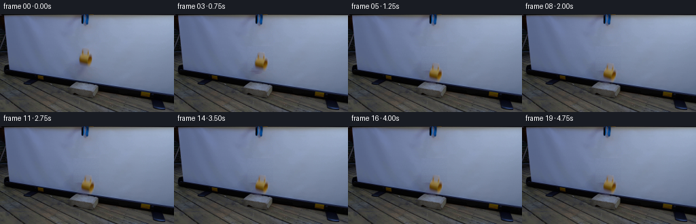
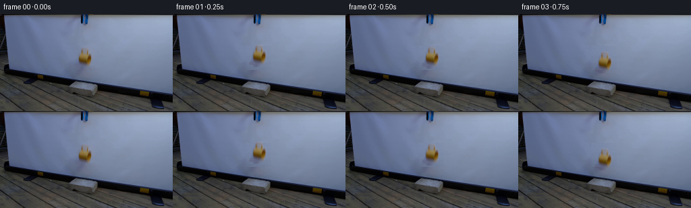

CODING AGENTS AS PIXEL WORLD MODELS
traex/DeepSeek-V4.1-Flash · 0126
点击播放 · 原生 RGB 像素
逐轮保存的候选
回放视频、检查图与代码变化。
每份候选均可单独播放。实际图片检查记录在下方工具轨迹中。
候选 01播放与检查图
点击播放 · 原生 RGB 像素


展开代码变化
--- 上一保存版本
+++ 本次保存版本
@@ -0,0 +1,251 @@
+from pathlib import Path
+
+import cv2
+import numpy as np
+from PIL import Image
+from scipy import ndimage
+
+import artifact_io
+
+
+CASE_DIR = Path(__file__).resolve().parent
+WIDTH, HEIGHT, FRAME_COUNT, FPS = 256, 144, 20, 4
+
+
+def _clean_plate(image: np.ndarray) -> np.ndarray:
+ """Replace the held mug with a quiet continuation of the projection screen."""
+ plate = image.copy()
+ x0, x1 = 108, 146
+ y0, y1 = 47, 83
+ rng = np.random.default_rng(126)
+
+ for y in range(y0, y1):
+ left = np.median(image[y, 96:106], axis=0)
+ right = np.median(image[y, 148:158], axis=0)
+ x = np.arange(x0, x1, dtype=np.float32)
+ t = np.clip((x - 101.0) / 51.0, 0.0, 1.0)
+ plate[y, x0:x1] = left[None, :] * (1.0 - t[:, None]) + right[None, :] * t[:, None]
+
+ # The screen has very fine sensor/projection grain. Keep a little of that
+ # texture in the reconstructed patch, but make it temporally stable.
+ grain = rng.normal(0.0, 0.9, (y1 - y0, x1 - x0, 1)).astype(np.float32)
+ plate[y0:y1, x0:x1] += grain
+ return np.clip(plate, 0.0, 255.0)
+
+
+def _extract_mug(image: np.ndarray, plate: np.ndarray):
+ """Extract premultiplied RGB and alpha for the small ceramic mug."""
+ x0, y0, x1, y1 = 111, 47, 144, 82
+ crop = image[y0:y1, x0:x1]
+ background = plate[y0:y1, x0:x1]
+
+ difference = np.max(np.abs(crop - background), axis=2)
+ core = difference > 14.0
+ labels, _ = ndimage.label(core, structure=np.ones((3, 3), dtype=np.uint8))
+ seed = labels[65 - y0, 125 - x0]
+ if seed == 0:
+ raise RuntimeError("Could not find the mug in the first frame")
+
+ support = labels == seed
+ support = ndimage.binary_closing(support, structure=np.ones((3, 3), dtype=bool))
+ support = ndimage.binary_fill_holes(support)
+ support = ndimage.binary_dilation(support, structure=np.ones((3, 3), dtype=bool), iterations=1)
+
+ alpha = np.clip((difference - 5.0) / 32.0, 0.0, 1.0)
+ alpha *= ndimage.gaussian_filter(support.astype(np.float32), 0.45)
+ alpha[alpha < 0.035] = 0.0
+
+ premultiplied = crop - (1.0 - alpha[:, :, None]) * background
+ premultiplied *= support[:, :, None]
+ return premultiplied.astype(np.float32), alpha.astype(np.float32)
+
+
+def _rotated_bounds(alpha: np.ndarray, center: tuple[float, float], angle_deg: float):
+ ys, xs = np.nonzero(alpha > 0.02)
+ if len(xs) == 0:
+ return 0.0, 0.0, 0.0, 0.0
+ angle = np.deg2rad(angle_deg)
+ c, s = np.cos(angle), np.sin(angle)
+ dx = xs.astype(np.float64) - center[0]
+ dy = ys.astype(np.float64) - center[1]
+ rx = c * dx - s * dy
+ ry = s * dx + c * dy
+ return float(rx.min()), float(rx.max()), float(ry.min()), float(ry.max())
+
+
+def _warp_mug(premultiplied: np.ndarray, alpha: np.ndarray, angle_deg: float, cx: float, bottom: float):
+ """Warp at 4x, then area-downsample to retain clean antialiased edges."""
+ scale = 4
+ h, w = alpha.shape
+ ys, xs = np.nonzero(alpha > 0.02)
+ center = ((xs.min() + xs.max()) * 0.5, (ys.min() + ys.max()) * 0.5)
+ rel_x0, rel_x1, rel_y0, rel_y1 = _rotated_bounds(alpha, center, angle_deg)
+
+ canvas_h, canvas_w = HEIGHT * scale, WIDTH * scale
+ src_center = (center[0] * scale, center[1] * scale)
+ dest_center = (
+ cx * scale - (rel_x0 + rel_x1) * scale * 0.5,
+ bottom * scale - rel_y1 * scale,
+ )
+
+ angle = np.deg2rad(angle_deg)
+ c, s = np.cos(angle), np.sin(angle)
+ rotation = np.array([[c, -s], [s, c]], dtype=np.float64)
+ translation = np.asarray(dest_center) - rotation @ np.asarray(src_center)
+ matrix = np.array(
+ [
+ [rotation[0, 0], rotation[0, 1], translation[0]],
+ [rotation[1, 0], rotation[1, 1], translation[1]],
+ ],
+ dtype=np.float64,
+ )
+
+ premult_small = premultiplied.astype(np.float32)
+ alpha_small = alpha.astype(np.float32)
+ premult_large = cv2.resize(
+ premult_small, (w * scale, h * scale), interpolation=cv2.INTER_CUBIC
+ )
+ alpha_large = cv2.resize(alpha_small, (w * scale, h * scale), interpolation=cv2.INTER_CUBIC)
+
+ premult_warped = cv2.warpAffine(
+ premult_large,
+ matrix,
+ (canvas_w, canvas_h),
+ flags=cv2.INTER_CUBIC,
+ borderMode=cv2.BORDER_CONSTANT,
+ borderValue=(0.0, 0.0, 0.0),
+ )
+ alpha_warped = cv2.warpAffine(
+ alpha_large,
+ matrix,
+ (canvas_w, canvas_h),
+ flags=cv2.INTER_CUBIC,
+ borderMode=cv2.BORDER_CONSTANT,
+ borderValue=0.0,
+ )
+ premult_warped = cv2.resize(
+ premult_warped, (WIDTH, HEIGHT), interpolation=cv2.INTER_AREA
+ )
+ alpha_warped = cv2.resize(
+ alpha_warped, (WIDTH, HEIGHT), interpolation=cv2.INTER_AREA
+ )
+ return np.clip(premult_warped, 0.0, 255.0), np.clip(alpha_warped, 0.0, 1.0)
+
+
+def _contact_shadow(cx: float, bottom: float, ground_y: float) -> np.ndarray:
+ height = max(0.0, ground_y - bottom)
+ closeness = np.clip(1.0 - height / 27.0, 0.0, 1.0)
+ yy, xx = np.mgrid[0:HEIGHT, 0:WIDTH]
+ sigma_x = 7.0 + 0.24 * height
+ sigma_y = 1.8 + 0.035 * height
+ blob = np.exp(
+ -0.5 * ((xx - cx - 1.0) / sigma_x) ** 2
+ -0.5 * ((yy - ground_y + 0.5) / sigma_y) ** 2
+ )
+ blob *= (yy >= 96.0)
+ strength = 0.035 + 0.17 * closeness
+ return (blob * strength).astype(np.float32)
+
+
+def _trajectory(index: int):
+ # Frame zero is the supplied held pose. The release happens just after it.
+ held_bottom = 77.5
+ ground_y = 103.0
+ if index == 0:
+ return 125.8, held_bottom, 0.0
+
+ bottoms = [
+ held_bottom,
+ held_bottom,
+ 80.1,
+ 87.1,
+ 97.2,
+ 103.0,
+ 101.8,
+ 103.0,
+ 103.0,
+ 103.0,
+ 103.0,
+ 103.0,
+ 103.0,
+ 103.0,
+ 103.0,
+ 103.0,
+ 103.0,
+ 103.0,
+ 103.0,
+ 103.0,
+ ]
+ angles = [
+ 0.0,
+ -0.5,
+ -1.2,
+ 0.2,
+ 1.6,
+ 2.8,
+ 2.0,
+ 4.1,
+ 5.0,
+ 3.8,
+ 4.4,
+ 4.05,
+ 4.22,
+ 4.13,
+ 4.18,
+ 4.16,
+ 4.17,
+ 4.17,
+ 4.17,
+ 4.17,
+ ]
+ x_offsets = [
+ 0.0,
+ 0.0,
+ 0.05,
+ 0.12,
+ 0.18,
+ 0.24,
+ 0.28,
+ 0.34,
+ 0.38,
+ 0.40,
+ 0.42,
+ 0.43,
+ 0.43,
+ 0.43,
+ 0.43,
+ 0.43,
+ 0.43,
+ 0.43,
+ 0.43,
+ 0.43,
+ ]
+ return 125.8 + x_offsets[index], bottoms[index], angles[index]
+
+
+def generate():
+ first = np.asarray(Image.open(CASE_DIR / "first_frame.png").convert("RGB"), dtype=np.uint8)
+ if first.shape != (HEIGHT, WIDTH, 3):
+ raise ValueError(f"Unexpected first frame shape: {first.shape}")
+
+ image = first.astype(np.float32)
+ plate = _clean_plate(image)
+ premultiplied, alpha = _extract_mug(image, plate)
+
+ frames = np.empty((FRAME_COUNT, HEIGHT, WIDTH, 3), dtype=np.uint8)
+ frames[0] = first
+
+ for index in range(1, FRAME_COUNT):
+ cx, bottom, angle = _trajectory(index)
+ shadow = _contact_shadow(cx, bottom, 103.0)
+ base = plate * (1.0 - 0.20 * shadow[:, :, None])
+
+ sprite_rgb, sprite_alpha = _warp_mug(premultiplied, alpha, angle, cx, bottom)
+ composed = base * (1.0 - sprite_alpha[:, :, None]) + sprite_rgb
+ frames[index] = np.clip(np.rint(composed), 0, 255).astype(np.uint8)
+
+ artifact_io.save(frames, CASE_DIR)
+
+
+if __name__ == "__main__":
+ generate()
可观测工具轨迹
实际执行的命令与返回图片。
命令 1exit 0
/bin/bash -c "pwd && rg --files -g '"'!*.mp4'"' -g '"'!*.webm'"' | sort"
命令 2exit 0
/bin/bash -c "sed -n '1,240p' prompt.txt"
命令 3exit 0
/bin/bash -c "sed -n '1,280p' GENERATION_RULES.md"
命令 4exit 127
/bin/bash -c "file first_frame.png && python - <<'PY'
from PIL import Image
im=Image.open('first_frame.png')
print(im.size, im.mode)
PY"命令 5exit 0
/bin/bash -c "python - <<'PY'
from PIL import Image
import numpy as np
im=Image.open('first_frame.png').convert('RGB')
a=np.asarray(im)
print('size',im.size,'dtype',a.dtype,'min',a.min(axis=(0,1)),'max',a.max(axis=(0,1)),'mean',a.mean(axis=(0,1)).round(1))
# color quantization counts
q=(a//16)*16
u,c=np.unique(q.reshape(-1,3),axis=0,return_counts=True)
for i in np.argsort(c)[-25:][::-1]: print(tuple(u[i]), int(c[i]))
PY"命令 6exit 0
/bin/bash -c "python - <<'PY'
from PIL import Image
import numpy as np
im=np.array(Image.open('first_frame.png').convert('RGB'))
# report exact top colors
u,c=np.unique(im.reshape(-1,3),axis=0,return_counts=True)
for i in np.argsort(c)[-40:][::-1]: print(tuple(map(int,u[i])),int(c[i]))
PY"命令 7exit 0
/bin/bash -c "python - <<'PY'
from PIL import Image
import numpy as np
im=np.array(Image.open('first_frame.png').convert('RGB')).astype(int)
r,g,b=im[:,:,0],im[:,:,1],im[:,:,2]
# yellow score
for name,m in [
('yellow',(r>70)&(g>55)&(r>g*1.05)&(g>b*1.15)),
('blue',(b>r*1.25)&(b>g*1.08)&(b>55)),
('darkblue',(b>r*1.2)&(b>g*1.02)&(b<110)),
('dark',(r<45)&(g<45)&(b<45)),
('bright',(r>145)&(g>145)&(b>150)),
('red',(r>g*1.15)&(r>b*1.15)),
]:
ys,xs=np.where(m)
print(name, len(xs), 'bbox', (xs.min(),ys.min(),xs.max(),ys.max()) if len(xs) else None)
# clusters count by y bands
print(' rowcounts', [(i,int(m[i].sum())) for i in range(0,144,12) if m[i].sum()])
PY"命令 8exit 0
/bin/bash -c "python - <<'PY'
try:
import cv2; print('cv2',cv2.__version__)
except Exception as e: print('no cv2',e)
try:
import scipy; print('scipy',scipy.__version__)
except Exception as e: print('no scipy',e)
PY"命令 9exit 0
/bin/bash -c "sed -n '1,240p' artifact_io.py && sed -n '1,120p' player_template.html"
命令 10exit 0
/bin/bash -c 'command -v chafa || true; command -v viu || true; command -v jp2 || true; command -v ffmpeg || true'
命令 11exit 1
/bin/bash -c "python - <<'PY'
from PIL import Image
import numpy as np
im=np.array(Image.open('first_frame.png').convert('RGB')).astype(float)
# print ascii classifications every 4x4 block, using HSV-like dominant
r,g,b=[im[:,:,i] for i in range(3)]
for y in range(0,144,4):
s=''
for x in range(0,256,4):
R,G,B=r[y:y+4,x:x+4].mean(0),g[y:y+4,x:x+4].mean(0),b[y:y+4,x:x+4].mean(0)
v=max(R,G,B); mn=min(R,G,B)
if v<28: c='@'
elif R>G*1.2 and G>B*1.15 and R>50: c='Y'
elif R>G*1.15 and R>B*1.2 and R>50: c='r'
elif B>R*1.2 and B>G*1.05 and v>45: c='B'
elif B>R*1.12 and v>100: c='b'
elif G>R*1.05 and G>B*1.02 and v>50: c='g'
elif v>125: c='W'
elif v>85: c='.'
elif v>50: c=','
else: c=':'
s+=c
print(f'{y:03d} {s}')
PY"命令 12exit 0
/bin/bash -c "python - <<'PY'
from PIL import Image
import numpy as np
im=np.array(Image.open('first_frame.png').convert('RGB')).astype(float)
r,g,b=[im[:,:,i] for i in range(3)]
for y in range(0,144,4):
s=''
for x in range(0,256,4):
R,G,B=r[y:y+4,x:x+4].mean(),g[y:y+4,x:x+4].mean(),b[y:y+4,x:x+4].mean()
v=max(R,G,B); mn=min(R,G,B)
if v<28: c='@'
elif R>G*1.2 and G>B*1.15 and R>50: c='Y'
elif R>G*1.15 and R>B*1.2 and R>50: c='r'
elif B>R*1.2 and B>G*1.05 and v>45: c='B'
elif B>R*1.12 and v>100: c='b'
elif G>R*1.05 and G>B*1.02 and v>50: c='g'
elif v>125: c='W'
elif v>85: c='.'
elif v>50: c=','
else: c=':'
s+=c
print(f'{y:03d} {s}')
PY"命令 13exit 0
/bin/bash -c "python - <<'PY'
from PIL import Image
import numpy as np
im=np.array(Image.open('first_frame.png').convert('RGB')).astype(float)
# luminance at 2x2 blocks with ascii 128 cols x 72 rows, cropped? full width
chars=' .,:;irsXA253hMHGS#9B&@'
y=im.mean(2)
for yy in range(0,144,2):
s=''
for xx in range(0,256,2):
v=y[yy:yy+2,xx:xx+2].mean()
s+=chars[min(len(chars)-1,int(v/256*len(chars)))]
print(f'{yy:03d} '+s)
PY"命令 14exit 0
/bin/bash -c "python - <<'PY'
from PIL import Image
import numpy as np
im=np.array(Image.open('first_frame.png').convert('RGB'))
# Save crops upscaled and print RGB stats/cells for mug/block/gripper regions
for name,box in [('mug',(105,47,170,88)),('block',(125,82,220,130)),('gripper',(130,0,225,72)),('scene',(0,0,256,144))]:
c=Image.fromarray(im[box[1]:box[3],box[0]:box[2]])
c.resize((c.width*6,c.height*6),Image.Resampling.NEAREST).save('.tmp/'+name+'.png')
print('saved')
PY"命令 15exit 0
/bin/bash -c "python - <<'PY'
from PIL import Image
import numpy as np
im=np.array(Image.open('first_frame.png').convert('RGB')).astype(int)
# Pixel RGB values at grid for key regions
for y in range(48,88,2):
vals=[]
for x in range(105,170,2):
R,G,B=im[y,x]
if R>70 and G>50 and R>B*1.3: c='Y'
elif max(R,G,B)<35:c='#'
elif max(R,G,B)-min(R,G,B)<15 and max(R,G,B)>110:c='W'
elif B>R*1.2:c='b'
elif R>G*1.15 and R>B*1.3:c='r'
else:c='.'
vals.append(c)
print(f'{y:03d} '+''.join(vals))
PY"命令 16exit 0
/bin/bash -c "python - <<'PY'
from PIL import Image
import numpy as np
im=np.array(Image.open('first_frame.png').convert('RGB'))
# target yellow bbox and exact colors region
r,g,b=[im[:,:,i].astype(int) for i in range(3)]
m=(r>55)&(g>40)&(r>g*1.05)&(g>b*1.15)
ys,xs=np.where(m)
print('bbox',xs.min(),ys.min(),xs.max(),ys.max())
u,c=np.unique(im[m],axis=0,return_counts=True)
for i in np.argsort(c)[-30:][::-1]: print(tuple(u[i]),int(c[i]))
PY"命令 17exit 1
/bin/bash -c "python - <<'PY'
from PIL import Image
import numpy as np, colorsys
im=np.array(Image.open('first_frame.png').convert('RGB')).astype(float)/255
# ASCII hue/sat/val for crop x95:150 y45:85, 1px; categories
chars=' .,:;irsXA253hMHGS#9B&@'
for y in range(44,86):
s=''
for x in range(95,151):
r,g,b=im[y,x]; h,s,v=colorsys.rgb_to_hsv(r,g,b)
if v<.18:c='#'
elif s<.12: c='W' if v>.7 else ('w' if v>.45 else '.')
elif .08<h<.18:c='Y' if s>.3 else 'y'
elif h<.06 or h>.95:c='R'
elif .5<h<.75:c='B'
elif .3<h<.5:c='G'
elif .18<h<.3:c='O'
else:c='?'
s+=c
print(f'{y:03d} {s}')
PY"命令 18exit 0
/bin/bash -c "python - <<'PY'
from PIL import Image
import numpy as np, colorsys
im=np.array(Image.open('first_frame.png').convert('RGB')).astype(float)/255
for y in range(44,86):
s=''
for x in range(95,151):
r,g,b=im[y,x]; h,sat,v=colorsys.rgb_to_hsv(float(r),float(g),float(b))
if v<.18:c='#'
elif sat<.12: c='W' if v>.7 else ('w' if v>.45 else '.')
elif .08<h<.18:c='Y' if sat>.3 else 'y'
elif h<.06 or h>.95:c='R'
elif .5<h<.75:c='B'
elif .3<h<.5:c='G'
elif .18<h<.3:c='O'
else:c='?'
s+=c
print(f'{y:03d} {s}')
PY"命令 19exit 0
/bin/bash -c "python - <<'PY'
from PIL import Image
import numpy as np
from sklearn.cluster import KMeans
im=np.array(Image.open('first_frame.png').convert('RGB'))
a=im.reshape(-1,3)
km=KMeans(n_clusters=12, random_state=0,n_init=10).fit(a)
l=km.labels_.reshape(144,256)
for i,c in enumerate(km.cluster_centers_):
m=l==i; ys,xs=np.where(m)
print(i, np.round(c).astype(int), 'n',len(xs),'bbox',(xs.min(),ys.min(),xs.max(),ys.max()), 'meanY',round(ys.mean(),1))
PY"命令 20exit 0
/bin/bash -c "python - <<'PY'
from PIL import Image
import numpy as np
im=np.array(Image.open('first_frame.png').convert('RGB'))
# mug crop values as a compact RGB-hex grid every pixel maybe too much; print quantized rows
for y in range(49,78):
print(f'{y:03d}', ' '.join(f'{r:02x}{g:02x}{b:02x}' for r,g,b in im[y,115:147:2]))
PY"命令 21exit 0
/bin/bash -c "python - <<'PY'
from PIL import Image
import numpy as np
im=np.array(Image.open('first_frame.png').convert('RGB')).astype(float)
# locate likely dark gripper object x130:180 y0:48 and mug x112:146 y49:78.
# dump quantized hue categories for gripper
for y in range(0,52,2):
s=''
for x in range(120,225,2):
R,G,B=im[y,x]; v=max(R,G,B); mn=min(R,G,B)
if v<25:c='#'
elif max(R,G,B)-mn<12 and v<100:c='d'
elif max(R,G,B)-mn<12:c='w'
elif R>G*1.15 and G>B*1.05:c='Y'
elif R>G*1.1 and R>B*1.1:c='r'
elif B>R*1.15:c='B'
else:c='.'
s+=c
print(f'{y:03d} {s}')
PY"命令 22exit 0
/bin/bash -c "python - <<'PY'
from PIL import Image
import numpy as np
im=np.array(Image.open('first_frame.png').convert('RGB'))
# print actual mug region every pixel with luminance only to understand shape
chars=' .:-=+*#%@'
for y in range(48,80):
s=''
for x in range(108,150):
R,G,B=im[y,x]; v=(int(R)+int(G)+int(B))/3
s+=chars[min(9,int(v/256*10))]
print(f'{y:03d} {s}')
PY"命令 23exit 0
/bin/bash -c "python - <<'PY'
from PIL import Image
import numpy as np, cv2
im=np.array(Image.open('first_frame.png').convert('RGB'))
g=cv2.cvtColor(im,cv2.COLOR_RGB2GRAY)
e=cv2.Canny(g,25,70)
print('edge count',e.sum()/255)
# edge map at 2x2 resolution
for y in range(0,144,2):
s=''
for x in range(0,256,2):
n=e[y:y+2,x:x+2].sum()
s += '#' if n>510 else ('+' if n>255 else ('.' if n else ' '))
print(f'{y:03d} {s}')
PY"命令 24exit 0
/bin/bash -c "python - <<'PY'
from PIL import Image
import numpy as np, colorsys
im=np.array(Image.open('first_frame.png').convert('RGB')).astype(float)/255
# grayscale mug edges specifically identify mask based color diff from surrounding bg
for y in range(47,82):
s=''
for x in range(100,157):
r,g,b=im[y,x]
# bg approx local blue: chroma
sat=max(r,g,b)-min(r,g,b)
if sat>.10 and r>g and g>b: c='M'
elif sat<.05 and .18<max(r,g,b)<.5:c='x'
elif sat<.08 and max(r,g,b)>.5:c='.'
elif max(r,g,b)<.1:c='#'
else:c='b'
s+=c
print(f'{y:03d} {s}')
PY"命令 25exit 0
/bin/bash -c "python - <<'PY'
from PIL import Image
import numpy as np
im=np.array(Image.open('first_frame.png').convert('RGB')).astype(int)
for y in range(50,77):
s=''
for x in range(117,148):
R,G,B=im[y,x]
# mug interior is neutral gray/white, but mug body dark brown
if R>65 and G>55 and B<45:c='Y'
elif R>75 and abs(R-G)<20 and B<65:c='y'
elif max(R,G,B)-min(R,G,B)<12 and 40<max(R,G,B)<120:c='w'
elif max(R,G,B)<40:c='#'
elif R>G*1.15 and R>B*1.3:c='b'
else:c='.'
s+=c
print(f'{y:03d} {s}')
PY"命令 26exit 0
/bin/bash -c "python - <<'PY'
from PIL import Image
import numpy as np
im=np.array(Image.open('first_frame.png').convert('RGB')).astype(float)
# grayscale crop x120:230 y80:144 luminance / chroma categories to see block
for y in range(78,144,2):
s=''
for x in range(100,240,2):
R,G,B=im[y,x]; v=(R+G+B)/3; sat=max(R,G,B)-min(R,G,B)
if v<25:c='#'
elif sat<7:c='.' if v<75 else ('w' if v<130 else 'W')
elif B>R*1.13 and B>G*1.05:c='b'
elif R>G*1.12 and R>B*1.12:c='r'
else:c=','
s+=c
print(f'{y:03d} {s}')
PY"命令 27exit 0
/bin/bash -c "python - <<'PY'
from PIL import Image
import numpy as np
im=np.array(Image.open('first_frame.png').convert('RGB'))
# stats by broad blocks and inspect background variation to see if screen is projection
for name,box in [('screen',(50,0,255,50)),('bgmid',(0,50,100,100)),('leftbottom',(0,100,120,144)),('brick',(160,105,250,135)),('table',(0,105,140,144))]:
x0,y0,x1,y1=box;a=im[y0:y1,x0:x1]
print(name,'mean',a.mean((0,1)).round(1),'std',a.std((0,1)).round(1),'min',a.min((0,1)),'max',a.max((0,1)))
PY"命令 28exit 0
/bin/bash -c "python - <<'PY'
from PIL import Image
import numpy as np
im=np.array(Image.open('first_frame.png').convert('RGB')).astype(float)
# color category detailed in brick region
for y in range(88,132,2):
s=''
for x in range(120,220,2):
R,G,B=im[y,x]; v=(R+G+B)/3; sat=max(R,G,B)-min(R,G,B)
if v<20:c='#'
elif sat<8:c='.' if v<70 else ('w' if v<120 else 'W')
elif B>R*1.15 and B>G*1.05:c='b'
elif R>G*1.1 and R>B*1.1:c='r'
else:c=','
s+=c
print(f'{y:03d} {s}')
PY"命令 29exit 0
/bin/bash -c "python - <<'PY'
import cv2, numpy as np
from PIL import Image
im=np.array(Image.open('first_frame.png').convert('RGB'))
g=cv2.cvtColor(im,cv2.COLOR_RGB2GRAY)
e=cv2.Canny(g,30,90)
lines=cv2.HoughLinesP(e,1,np.pi/180,threshold=20,minLineLength=15,maxLineGap=3)
for l in sorted(lines[:,0].tolist(), key=lambda p: -((p[2]-p[0])**2+(p[3]-p[1])**2))[:60]:
x1,y1,x2,y2=l
print(l, 'len',round(((x2-x1)**2+(y2-y1)**2)**.5,1))
PY"命令 30exit 0
/bin/bash -c "python - <<'PY'
from PIL import Image
import numpy as np
im=np.array(Image.open('first_frame.png').convert('RGB')).astype(float)
# pixel values top 20 rows sampled columns to infer projection screen, dark left, white right
for y in [0,1,2,3,4,6,10,20,40,50,60,80,100]:
print('y',y,' '.join(f'{x}:{tuple(im[y,x].astype(int))}' for x in [0,10,50,100,120,140,160,180,200,220,240,255]))
PY"命令 31exit 0
/bin/bash -c "python - <<'PY'
from PIL import Image
import numpy as np
im=np.array(Image.open('first_frame.png').convert('RGB')).astype(float)
# luminance/chroma 1px compact for lower region with coordinates header
chars=' .:-=+*#%@'
for y in range(80,144):
s=''
for x in range(0,256,2):
v=im[y,x].mean(); sat=im[y,x].max()-im[y,x].min()
if sat>25 and im[y,x,2]>im[y,x,0]*1.1:c='b'
elif sat>25 and im[y,x,0]>im[y,x,1]*1.1:c='r'
else:c=chars[min(9,int(v/256*10))]
s+=c
print(f'{y:03d} {s}')
PY"命令 32exit 0
/bin/bash -c "python - <<'PY'
from PIL import Image
import numpy as np
im=np.array(Image.open('first_frame.png').convert('RGB')).astype(float)
# background row y=50/60/70 median per x bins and print avg RGB
for y in [40,50,60,70,75,80]:
print('y',y)
for x in range(0,256,16): print(x,tuple(np.median(im[y:y+3,x:x+16],axis=(0,1)).astype(int)),end=' ')
print()
PY"命令 33exit 0
/bin/bash -c "python - <<'PY'
from PIL import Image
import numpy as np
im=np.array(Image.open('first_frame.png').convert('RGB')).astype(float)
# detect dark rectangle/gripper in x125:150 y0:52, print actual r,g,b for pixels at rows
for y in range(0,53,2):
vals=[]
for x in range(125,151,2): vals.append(tuple(im[y,x].astype(int)))
print(y,vals)
PY"命令 34exit 0
/bin/bash -c "python - <<'PY'
from PIL import Image
import numpy as np
im=np.array(Image.open('first_frame.png').convert('RGB')).astype(float)
# for rows 50-78, x=100..160 print brightness values with category: mug may be x115-142. Focus silhouette boundaries using difference from bg gradient
for y in range(49,80):
print(f'{y:03d}', ' '.join(f'{int(im[y,x].mean()):3d}' for x in range(108,150)))
PY"命令 35exit 0
/bin/bash -c "python - <<'PY'
from PIL import Image
import numpy as np
im=np.array(Image.open('first_frame.png').convert('RGB')).astype(float)
# fit per-row quadratic background using clear x ranges 80:105 and 150:180, evaluate ROI
res=np.zeros((144,256)); pred=np.zeros_like(im)
for y in range(144):
xs=np.r_[80:105,150:180]
vals=im[y,xs]
co=np.polyfit(xs,vals,2)
xx=np.arange(256)
pred[y]=np.stack([np.polyval(co[:,i],xx) for i in range(3)],1)
res=np.abs(im-pred).max(2)
for y in range(44,86):
s=''
for x in range(95,155):
r=res[y,x]
s += '#' if r>45 else ('+' if r>25 else ('.' if r>12 else ' '))
print(f'{y:03d} {s}')
PY"命令 36exit 0
/bin/bash -c "python - <<'PY'
from PIL import Image
import numpy as np
im=np.array(Image.open('first_frame.png').convert('RGB')).astype(float)
for y in range(50,78):
# bg from x80:105 per channel median
print(y, ' '.join(f'{im[y,x,0]:.0f}/{im[y,x,1]:.0f}/{im[y,x,2]:.0f}' for x in range(125,143)))
PY"命令 37exit 0
/bin/bash -c "python - <<'PY'
from PIL import Image
import numpy as np
im=np.array(Image.open('first_frame.png').convert('RGB')).astype(float)
# test residual from horizontal neighbor interpolated bg at y (between x90 and x155)
for y in range(45,84):
bg=[]
for x in range(95,165):
left=np.median(im[y,80:100],axis=0); right=np.median(im[y,155:180],axis=0)
p=left+(right-left)*(x-90)/(65)
d=np.abs(im[y,x]-p).max()
bg.append(d)
s=''.join('#' if v>50 else '+' if v>30 else '.' if v>15 else ' ' for v in bg)
print(f'{y:03d} {s}')
PY"命令 38exit 0
/bin/bash -c "python - <<'PY'
from PIL import Image
import numpy as np
im=np.array(Image.open('first_frame.png').convert('RGB')).astype(float)
# save difference visualization using linear bg and residual, upscaled
bg=np.zeros_like(im)
for y in range(144):
left=np.median(im[y,60:100],axis=0); right=np.median(im[y,155:200],axis=0)
for x in range(256):
# piecewise interp from x100 to155
t=np.clip((x-100)/55,0,1)
bg[y,x]=left+(right-left)*t
res=np.abs(im-bg).max(2)
out=np.clip(res*4,0,255).astype(np.uint8)
Image.fromarray(out).resize((1024,576),Image.Resampling.NEAREST).save('.tmp/residual.png')
print('residual stats',res.max(),np.percentile(res,[90,95,99]))
PY"命令 39exit 0
/bin/bash -c "python - <<'PY'
from PIL import Image
import numpy as np
im=np.array(Image.open('first_frame.png').convert('RGB')).astype(float)
# mug mask from residual using piecewise bg; report row runs and mean pixels
for y in range(48,84):
left=np.median(im[y,60:100],axis=0); right=np.median(im[y,155:200],axis=0)
xs=[]
for x in range(100,160):
t=np.clip((x-100)/55,0,1); p=left+(right-left)*t
if np.abs(im[y,x]-p).max()>22: xs.append(x)
if xs:
# runs
runs=[]; st=pr=xs[0]
for x in xs[1:]:
if x>pr+1:runs.append((st,pr));st=x
pr=x
runs.append((st,pr))
print(y,runs)
PY"命令 40exit 0
/bin/bash -c "python - <<'PY'
from PIL import Image
import numpy as np
im=np.array(Image.open('first_frame.png').convert('RGB')).astype(float)
# mug crop x112..140 y49..79, print residual mask alpha binary with bg model and save raw crop
x0,y0,x1,y1=112,49,141,80
crop=im[y0:y1,x0:x1]
Image.fromarray(crop.astype(np.uint8)).resize((29*12,31*12),Image.Resampling.NEAREST).save('.tmp/mug_crop.png')
# print one char per pixel using categories
for y in range(y0,y1):
s=''
for x in range(x0,x1):
R,G,B=im[y,x]; v=(R+G+B)/3; sat=max(R,G,B)-min(R,G,B)
if v<60 and sat<20:c='#'
elif sat>25 and R>G and G>B:c='Y'
elif sat<12:c='w'
elif R>B*1.1:c='r'
else:c='b'
s+=c
print(f'{y:03d} {s}')
PY"命令 41exit 0
/bin/bash -c "python - <<'PY'
import cv2, numpy as np
from PIL import Image
im=np.array(Image.open('first_frame.png').convert('RGB'))
r,g,b=[im[:,:,i].astype(int) for i in range(3)]
# masks
masks={
'dark':(r+g+b<150),
'blue_dark':(b>r+20)&(b>g+5)&(b<100),
'yellow':(r>g*1.1)&(g>b*1.2)&(r>40),
'brown':(r>g*1.1)&(g>b*1.2)&(r<150),
'brightgray':(np.max(im,2)-np.min(im,2)<18)&(np.mean(im,2)>90),
}
for name,m in masks.items():
n,l,stats,cents=cv2.connectedComponentsWithStats(m.astype('uint8'),8)
cs=[]
for i in range(1,n):
x,y,w,h,area=stats[i]
if area>=8: cs.append((area,x,y,w,h,tuple(np.round(cents[i],1))))
print('\\n',name,len(cs))
for c in sorted(cs,reverse=True)[:20]:print(c)
PY"命令 42exit 0
/bin/bash -c "python - <<'PY'
from PIL import Image
import numpy as np
im=np.array(Image.open('first_frame.png').convert('RGB')).astype(float)
# show RGB chroma exact in mug crop as coarse ranges
for y in range(50,78):
s=''
for x in range(112,142):
R,G,B=im[y,x]; mx=max(R,G,B); mn=min(R,G,B)
if mx<75 and mx-mn<25:c='#'
elif R>G*1.08 and G>B*1.15 and R>55:c='Y'
elif R>G*1.05 and R>B*1.1:c='r'
elif mx-mn<18 and mx>100:c='w'
elif B>R*1.08:c='b'
else:c='.'
s+=c
print(f'{y:03d} {s}')
PY"命令 43exit 0
/bin/bash -c "python - <<'PY'
from PIL import Image
import numpy as np
im=np.array(Image.open('first_frame.png').convert('RGB')).astype(float)
# Print mug crop edge-aligned every pixel but in categories; identify all foreground pixels x114..139 y50..79
for y in range(49,80):
s=''
for x in range(112,142):
R,G,B=im[y,x]; mx=max(R,G,B); mn=min(R,G,B)
if mx<65:c='#'
elif R>G*1.10 and G>B*1.12 and R>50:c='Y'
elif mx-mn<15:c='w'
elif R>G*1.06 and R>B*1.12:c='r'
elif B>R*1.08:c='b'
else:c='.'
s+=c
print(f'{y:03d} {s}')
PY"命令 44exit 0
/bin/bash -c "python - <<'PY'
from PIL import Image
import numpy as np
im=np.array(Image.open('first_frame.png').convert('RGB')).astype(float)
# compare mug's white rim likely to background using R-G chroma. Print signed chroma R-B and luminance
for y in range(50,78):
print(f'{y:03d}', ' '.join(f'{int(im[y,x,0]-im[y,x,2]):+3d}' for x in range(112,142)))
PY"命令 45exit 0
/bin/bash -c "python - <<'PY'
from PIL import Image
import numpy as np
im=np.array(Image.open('first_frame.png').convert('RGB')).astype(float)
# Estimate mug silhouette by R-B chroma > -20 around local area, excluding background
for y in range(48,81):
s=''
for x in range(108,150):
c=im[y,x,0]-im[y,x,2]
v=im[y,x].mean()
if c>-25 and v<145:c='M'
elif c>-18 and v<140:c='m'
elif v<90:c='d'
else:c='.'
s+=c
print(f'{y:03d} {s}')
PY"命令 46exit 0
/bin/bash -c "python - <<'PY'
from PIL import Image
import numpy as np
im=np.array(Image.open('first_frame.png').convert('RGB')).astype(float)
# background row/column around brick: print luminance at lower x sections
for y in range(80,144,4):
print('y',y)
for x in range(0,256,8): print(f'{x}:{int(im[y:y+4,x:x+8].mean()):3d}',end=' ')
print()
PY"命令 47exit 0
/bin/bash -c "python - <<'PY'
from PIL import Image
import numpy as np
from sklearn.cluster import KMeans
im=np.array(Image.open('first_frame.png').convert('RGB'))
# fit only lower region
reg=im[80:144]
km=KMeans(n_clusters=8,random_state=3,n_init=10).fit(reg.reshape(-1,3))
cent=np.round(km.cluster_centers_).astype(int)
print(list(enumerate(map(tuple,cent))))
l=km.labels_.reshape(reg.shape[:2])
chars='ABCDEFGH'
for y in range(0,64,2):
print(f'{y+80:03d} '+''.join(chars[l[y,x]] if x%2==0 else '' for x in range(0,256,2)))
PY"命令 48exit 0
/bin/bash -c "python - <<'PY'
from PIL import Image
import numpy as np
im=np.array(Image.open('first_frame.png').convert('RGB')).astype(float)
# Fit mug silhouette by low red-blue chroma on local and inspect exact output crop with mask; create mask image
mask=np.zeros((144,256),bool)
for y in range(48,82):
for x in range(105,150):
R,G,B=im[y,x]; mx=max(R,G,B); mn=min(R,G,B); c=R-B
if mx<145 and (c>-24 or mx-mn<20): mask[y,x]=True
# only region, save
Image.fromarray((mask*255).astype('uint8')).resize((1024,576),Image.Resampling.NEAREST).save('.tmp/mugmask.png')
print('mask area',mask.sum())
PY"命令 49exit 0
/bin/bash -c "python - <<'PY'
from PIL import Image
import numpy as np
im=np.array(Image.open('first_frame.png').convert('RGB')).astype(float)
chars=' .:-=+*#%@'
for y in range(82,134):
s=''
for x in range(70,190):
v=im[y,x].mean(); sat=im[y,x].max()-im[y,x].min()
if sat>20 and im[y,x,2]>im[y,x,0]*1.1:c='b'
elif sat>20 and im[y,x,0]>im[y,x,1]*1.1:c='r'
else:c=chars[min(9,int(v/256*10))]
s+=c
print(f'{y:03d} {s}')
PY"命令 50exit 0
/bin/bash -c "python - <<'PY'
from PIL import Image
import numpy as np
im=np.array(Image.open('first_frame.png').convert('RGB')).astype(float)
# print lower region true grayscale ascii at half x, every y to identify brick edges
chars=' .:-=+*#%@'
for y in range(84,132):
s=''
for x in range(100,240,1):
v=im[y,x].mean(); sat=im[y,x].max()-im[y,x].min()
c=chars[min(9,int(v/256*10))]
if sat>20 and im[y,x,2]>im[y,x,0]*1.1:c='B'
s+=c
print(f'{y:03d} {s}')
PY"命令 51exit 0
/bin/bash -c "python - <<'PY'
from PIL import Image
import numpy as np
im=np.array(Image.open('first_frame.png').convert('RGB')).astype(float)
# show blue vs gray lower region around brick in 2x2 to map visible geometry
for y in range(82,132,2):
s=''
for x in range(100,250,2):
a=im[y:y+2,x:x+2].mean((0,1)); v=a.mean(); sat=a.max()-a.min()
if sat>18 and a[2]>a[0]*1.12:c='B'
elif v<10:c='#'
elif v<25:c='@'
elif v<40:c='%'
elif v<55:c='*'
elif v<70:c='+'
elif v<85:c='-'
elif v<100:c=':'
elif v<115:c='.'
else:c=' '
s+=c
print(f'{y:03d} {s}')
PY"命令 52exit 0
/bin/bash -c "python - <<'PY'
from PIL import Image
import numpy as np
im=np.array(Image.open('first_frame.png').convert('RGB')).astype(float)
# Background hue: brick detection, get row boundary from x 80:105 vs screen transition
# print rgb at y 112-120 across x 0:256 every 10
for y in [108,112,116,120,124,128]:
print('y',y)
for x in range(0,256,10): print(x,tuple(im[y,x].astype(int)),end='; ')
print()
PY"命令 53exit 0
/bin/bash -c "python - <<'PY'
from PIL import Image
import numpy as np
im=np.array(Image.open('first_frame.png').convert('RGB')).astype(float)
# derive brick/table shape from blue saturation; list blue mask runs each row x 0:256
m=(im[:,:,2]>im[:,:,0]*1.13)&(im[:,:,2]>im[:,:,1]*1.04)&(im[:,:,2]>45)
for y in range(80,144,2):
xs=np.flatnonzero(m[y])
# contiguous ranges length >3
runs=[]
if len(xs):
st=pr=xs[0]
for x in xs[1:]:
if x>pr+1:
if pr-st>=3:runs.append((st,pr))
st=x
pr=x
if pr-st>=3:runs.append((st,pr))
print(y,runs)
PY"命令 54exit 0
/bin/bash -c "python - <<'PY'
from PIL import Image
import numpy as np
im=np.array(Image.open('first_frame.png').convert('RGB')).astype(float)
# Find pixelwise extrema to determine canvas / dark object boundaries
for y in [0,1,2,3,4,5,10,20,40,50,60,70,80,90,100,110,120,130,140,143]:
row=im[y]
# abrupt diffs
d=np.abs(np.diff(row,axis=0)).max(1)
idx=np.flatnonzero(d>40)
print(y, idx[:30].tolist(), 'count',len(idx))
PY"命令 55exit 0
/bin/bash -c "python - <<'PY'
from PIL import Image
import numpy as np
im=np.array(Image.open('first_frame.png').convert('RGB')).astype(float)
# raw colors near x 0-30 rows 0-100 to understand dark left border/object
for y in [0,1,2,3,4,5,10,20,40,60,80,100,120,140]:
print(y, [tuple(im[y,x].astype(int)) for x in [0,1,2,3,4,5,6,7,8,9,10,15,20,25,30]])
PY"命令 56exit 0
/bin/bash -c "python - <<'PY'
from PIL import Image
import numpy as np
im=np.array(Image.open('first_frame.png').convert('RGB')).astype(float)
# grayscale line at y=1 and y=2 to identify ceiling strip, and dark x 0:12
for y in [0,1,2,3,4,5,10,20,40,60,70,80,90]:
print('y',y,[(x,int(im[y,x].mean())) for x in [0,1,2,3,4,5,6,7,8,9,10,11,12,13,14,15,20,30,40,60,80,100,110,120,130,140,160,180,200,240,255]])
PY"命令 57exit 0
/bin/bash -c "python - <<'PY'
from PIL import Image
import numpy as np
im=np.array(Image.open('first_frame.png').convert('RGB')).astype(float)
# For row 60 show transition x=10..20
for y in [0,1,2,3,5,10,20,40,60,70,80]:
print('y',y,[(x,tuple(im[y,x].astype(int))) for x in range(5,18)])
PY"命令 58exit 0
/bin/bash -c "python - <<'PY'
from PIL import Image
import numpy as np
im=np.array(Image.open('first_frame.png').convert('RGB')).astype(float)
# check background projection horizontal trend in x=20..110 row50, model as low order x + y
for y in [50,55,60,65,70,75,80,85,90,95,100]:
print(y, [round(im[y,x].mean(),1) for x in range(15,115,5)])
PY"命令 59exit 0
/bin/bash -c "python - <<'PY'
from PIL import Image
import numpy as np
im=np.array(Image.open('first_frame.png').convert('RGB')).astype(float)
for y in [98,100,102,104,106,108,110,112,114,116,118,120,122,124]:
print('\\ny',y)
for x in range(90,231,5):
a=im[y,x]
print(f'{x}:{int(a.mean())}/{int(a.max()-a.min())}',end=' ')
print()
PY"命令 60exit 0
/bin/bash -c 'ls -la'
命令 61exit 0
/bin/bash -c 'git status --short'
命令 62exit 0
/bin/bash -c "python - <<'PY'
from PIL import Image
import numpy as np
im=np.array(Image.open('first_frame.png').convert('RGB')).astype(float)
# brick dark area dimensions from x=145..? rows 104..122, locate dark runs per row
for y in range(98,128):
dark=im[y].mean(1)<15
xs=np.flatnonzero(dark)
if len(xs):
# runs > 2
runs=[];st=pr=xs[0]
for x in xs[1:]:
if x>pr+1:
if pr-st>=2:runs.append((st,pr))
st=x
pr=x
if pr-st>=2:runs.append((st,pr))
print(y,runs)
PY"命令 63exit 0
/bin/bash -c "python - <<'PY'
from PIL import Image
import numpy as np
im=np.array(Image.open('first_frame.png').convert('RGB')).astype(float)
# mug area from chroma: determine bounds exactly via mask R-B>-25 and y<82 plus connected comps
m=(im[:,:,0]-im[:,:,2]>-25)&(np.mean(im,2)<145)
import cv2
n,l,s,c=cv2.connectedComponentsWithStats(m.astype('uint8'),8)
for i in range(1,n):
x,y,w,h,a=s[i]
if 80<x<160 and 40<y<85 and a>30: print(i,x,y,w,h,a,c[i])
PY"命令 64exit 0
/bin/bash -c "python - <<'PY'
from PIL import Image
import numpy as np
im=np.array(Image.open('first_frame.png').convert('RGB')).astype(float)
# evaluate background reconstruction around mug using only row above y=48 and below y=78? estimate mug backdrop from x=100,150 at same y
# print row mug mask plus alpha distance outside
for y in range(48,81):
s=''
for x in range(112,142):
c=im[y,x,0]-im[y,x,2]
s+='X' if c>-25 and im[y,x].mean()<145 else ('.' if c<-30 else '+')
print(f'{y:03d} {s}')
PY"命令 65exit 0
/bin/bash -c "python - <<'PY'
from PIL import Image
import numpy as np
im=np.array(Image.open('first_frame.png').convert('RGB')).astype(float)
# local background from linear in x at each y using 90:100 and 150:160, report residual sign ascii x112..142
for y in range(48,81):
s=''
for x in range(112,142):
l=np.median(im[y,90:100],axis=0); r=np.median(im[y,150:160],axis=0)
p=l+(r-l)*(x-95)/60
d=np.abs(im[y,x]-p).max()
s += '#' if d>45 else '+' if d>25 else '.' if d>12 else ' '
print(f'{y:03d} {s}')
PY"命令 66exit 0
/bin/bash -c "python - <<'PY'
from PIL import Image
import numpy as np
im=np.array(Image.open('first_frame.png').convert('RGB')).astype(float)
# mug mask residual local interpolation x=90:100 and 150:160 threshold 14, restrict 50..77
ys,xs=np.where(np.zeros((144,256),bool))
mask=np.zeros((144,256),bool)
for y in range(48,80):
l=np.median(im[y,90:100],axis=0); r=np.median(im[y,150:160],axis=0)
for x in range(110,145):
p=l+(r-l)*(x-95)/60
if np.abs(im[y,x]-p).max()>14: mask[y,x]=True
print('area',mask.sum())
Image.fromarray(im.astype('uint8')).save('.tmp/base.png')
# overwrite mug region with interpolated bg and save plate
bg=im.copy()
for y in range(48,80):
l=np.median(im[y,90:100],axis=0); r=np.median(im[y,150:160],axis=0)
for x in range(110,145):
bg[y,x]=l+(r-l)*(x-95)/60
# add noise from neighbor? save
Image.fromarray(np.clip(bg,0,255).astype('uint8')).resize((1024,576),Image.Resampling.NEAREST).save('.tmp/plate_lin.png')
print('saved')
PY"命令 67exit 0
/bin/bash -c "python - <<'PY'
from PIL import Image
import numpy as np
im=np.array(Image.open('first_frame.png').convert('RGB')).astype(float)
# compare interpolated plate to adjacent bg in mug ROI rows 78-82; print average diff
for y in [50,60,70,76,78,80]:
print(y,im[y,120],im[y,130],im[y,140])
PY"命令 68exit 0
/bin/bash -c "python - <<'PY'
from PIL import Image
import numpy as np
im=np.array(Image.open('first_frame.png').convert('RGB')).astype(float)
# brick block: identify pixels around x145..208 y104..122 that are dark; report exact RGB dark vs surrounding
for y in [102,104,106,108,110,112,114,116,118,120,122]:
print(y,[(x,tuple(im[y,x].astype(int))) for x in range(140,216,8)])
PY"命令 69exit 0
/bin/bash -c "python - <<'PY'
from PIL import Image
import numpy as np
im=np.array(Image.open('first_frame.png').convert('RGB')).astype(float)
# Print raw image as sixel? no. create SVG-like HTML? inspect via browser impossible. Numeric segmentation enough.
# estimate gripper: dark rectangle x? y? on screen; detect dark neutral pixels in upper region excluding left dark border
r,g,b=im[:,:,0],im[:,:,1],im[:,:,2]
m=(r<55)&(g<55)&(b<75)&(np.arange(256)[None,:]>20)
# per-row runs
for y in range(0,90,2):
xs=np.flatnonzero(m[y]); runs=[]
if len(xs):
st=pr=xs[0]
for x in xs[1:]:
if x>pr+1:
if pr-st>=2:runs.append((st,pr))
st=x
pr=x
if pr-st>=2:runs.append((st,pr))
print(y,runs)
PY"命令 70exit 0
/bin/bash -c "python - <<'PY'
from PIL import Image
import numpy as np
im=np.array(Image.open('first_frame.png').convert('RGB')).astype(float)
# Identify gripper: likely vertical dark strip x~120? sample exact x 118:132 y0:52 colors
for y in range(0,54,2):
print(y, [(x,tuple(im[y,x].astype(int))) for x in [118,119,120,121,122,123,124,125,126,127,128,129,130,131]])
PY"命令 71exit 0
/bin/bash -c "python - <<'PY'
from PIL import Image
import numpy as np
im=np.array(Image.open('first_frame.png').convert('RGB')).astype(float)
for y in range(94,126):
s=''
for x in range(90,230):
a=im[y,x]; v=a.mean(); sat=a.max()-a.min()
if v<12:c='#'
elif sat>20 and a[2]>a[0]*1.12:c='B'
elif v<45:c='@'
elif v<65:c='%'
elif v<85:c='*'
elif v<105:c='+'
elif v<120:c='-'
else:c='.'
s+=c
print(f'{y:03d} {s}')
PY"命令 72exit 0
/bin/bash -c "python - <<'PY'
from PIL import Image
import numpy as np
im=np.array(Image.open('first_frame.png').convert('RGB')).astype(float)
# background approximation for mug based on vertical/horizontal polynomial fitted to rows 40:50 and 78:90, cols 80:110,145:180
from numpy.polynomial import polynomial as P
# fit each channel plane quadratic across mask excluding x110:145 y50:80
Y,X=np.mgrid[0:144,0:256]
mask=np.ones((144,256),bool); mask[50:79,110:145]=False
sel=mask
# fit x,y polynomial terms 1,x,y,x2,xy,y2
A=np.stack([np.ones(sel.sum()),X[sel],Y[sel],X[sel]**2,X[sel]*Y[sel],Y[sel]**2],1)
bg=np.zeros_like(im)
for c in range(3):
co=np.linalg.lstsq(A,im[:,:,c][sel],rcond=None)[0]
bg[:,:,c]=(co[0]+co[1]*X+co[2]*Y+co[3]*X**2+co[4]*X*Y+co[5]*Y**2)
print('coefs',co)
# save crop residual ascii
for y in range(48,81):
s=''
for x in range(108,150):
d=np.abs(im[y,x]-bg[y,x]).max()
s+='#' if d>45 else '+' if d>25 else '.' if d>12 else ' '
print(f'{y:03d} {s}')
print('bg values',[(x,bg[60,x].round().astype(int).tolist()) for x in [100,110,120,130,140,150]])
PY"命令 73exit 0
/bin/bash -c "python - <<'PY'
from PIL import Image
import numpy as np
im=np.array(Image.open('first_frame.png').convert('RGB')).astype(float)
# vertical line x125 around y 50-77 mug color to infer geometry; line x116 and x134
for x in [116,120,125,130,135,139]:
print('x',x)
for y in range(48,80):
if y%2==0: print(y,tuple(im[y,x].astype(int)),end=';')
print()
PY"命令 74exit 0
/bin/bash -c "python - <<'PY'
from PIL import Image
import numpy as np
im=np.array(Image.open('first_frame.png').convert('RGB')).astype(float)
# print mug crop in CSS hex at 2px blocks maybe human can inspect but not necessary
# crop colors and create enhanced contrast png
crop=im[48:80,112:141]
enh=np.clip((crop-crop.mean((0,1)))*2.5+100,0,255).astype('uint8')
Image.fromarray(enh).resize((580,640),Image.Resampling.NEAREST).save('.tmp/mug_enh.png')
print('done')
PY"命令 75exit 0
/bin/bash -c "python - <<'PY'
from PIL import Image
import numpy as np
im=np.array(Image.open('first_frame.png').convert('RGB')).astype(float)
# verify frame boundary is 1px top and maybe black border around left; segment line/background
# print average per column of top 2 rows to detect top image frame; and row avg
for y in range(0,6): print('row',y,im[y].mean(0).round(1),im[y].mean(1).mean())
print('row95-110 avg cols',[(x,round(im[95:110,x].mean(),1)) for x in range(0,256,8)])
PY"命令 76exit 0
/bin/bash -c 'python generate.py'
命令 77exit 0
/bin/bash -c "python - <<'PY'
from PIL import Image
import numpy as np
from pathlib import Path
files=sorted(Path('frames').glob('*.png'))
ims=[np.array(Image.open(p)) for p in files]
print('frames',len(ims),'shape',ims[0].shape)
print('frame0 exact',np.array_equal(ims[0],np.array(Image.open('first_frame.png').convert('RGB'))))
for i in range(1,len(ims)):
d=np.abs(ims[i].astype(int)-ims[i-1].astype(int))
print(i,'changed',np.count_nonzero(d),'mean',round(d.mean(),3),'max',d.max())
# bounds of pixels changed from plate first frame region in final frames via yellow/brown chroma
for i in [0,1,2,3,4,5,7,10,19]:
a=ims[i].astype(int); m=(a[:,:,0]>a[:,:,2]+20)&(a[:,:,0]>45)
ys,xs=np.where(m)
print(i, (xs.min(),ys.min(),xs.max(),ys.max(),len(xs)) if len(xs) else None)
PY"命令 78exit 0
/bin/bash -c "python - <<'PY'
from PIL import Image
import numpy as np
for i in [0,1,2,3,4,5,7,10,19]:
a=np.array(Image.open(f'frames/{i:02d}.png').convert('RGB')).astype(int)
# restrict to mug area; detect chroma R-B> -20 and brightness <145
m=(a[:,:,0]-a[:,:,2]>-20)&(a.mean(2)<145)
m[:40]=False;m[:, :100]=False;m[:,150:]=False
ys,xs=np.where(m)
print(i,(xs.min(),ys.min(),xs.max(),ys.max(),len(xs)) if len(xs) else None)
PY"命令 79exit 0
/bin/bash -c "python - <<'PY'
from PIL import Image
import numpy as np
# make diagnostic crops from first, fall, contact, settle
for i in [0,1,3,5,19]:
a=Image.open(f'frames/{i:02d}.png').convert('RGB')
a.crop((105,40,150,112)).resize((360,576),Image.Resampling.NEAREST).save(f'.tmp/diag_{i:02d}.png')
# extract mask from generate functions by importing
import generate
im=np.asarray(Image.open('first_frame.png').convert('RGB'),dtype=np.float32)
plate=generate._clean_plate(im)
p,a=generate._extract_mug(im,plate)
print('alpha bbox',np.where(a>0.02)[1].min(),np.where(a>0.02)[0].min(),np.where(a>0.02)[1].max(),np.where(a>0.02)[0].max(),'sum',a.sum())
for yy in range(a.shape[0]):
xs=np.flatnonzero(a[yy]>.02)
if len(xs): print(yy+47,xs.min()+111,xs.max()+111)
PY"命令 80exit 0
/bin/bash -c "python - <<'PY'
from PIL import Image
import numpy as np
# quantify whether sprite leaves obvious rectangular edges by comparing frame1 against plate in local crop
import generate
im=np.asarray(Image.open('first_frame.png').convert('RGB'),dtype=np.float32)
plate=generate._clean_plate(im)
# plate not exposed, redo
p,a=generate._extract_mug(im,plate)
f=np.asarray(Image.open('frames/01.png').convert('RGB'),dtype=np.float32)
d=np.max(np.abs(f-plate),axis=2)
for y in range(42,88):
s=''
for x in range(100,150):
d0=d[y,x]
s += '#' if d0>40 else '+' if d0>20 else '.' if d0>8 else ' '
print(f'{y:03d} {s}')
PY"命令 81exit 0
/bin/bash -c "python - <<'PY'
from PIL import Image
import numpy as np
# make side-by-side enlarged frame strips and check contact crop stats
import cv2
ims=[np.array(Image.open(f'frames/{i:02d}.png')) for i in range(20)]
# contact sheet of mug area: frame 0-19 2 rows x10 cols
crop=[Image.fromarray(a[40:112,105:150]).resize((180,288),Image.Resampling.NEAREST) for a in ims]
out=Image.new('RGB',(180*10,288*2),(25,28,35))
for i,c in enumerate(crop): out.paste(c,((i%10)*180,(i//10)*288))
out.save('.tmp/mug_sheet.png')
# show contact diff between frame5 and plate
print('sheet saved')
PY"命令 82exit 0
/bin/bash -c "python - <<'PY'
from PIL import Image
import numpy as np
# sample image using ANSI truecolor half blocks maybe tool supports output? likely no. Use pixel stats.
for i in [1,3,5,19]:
a=np.array(Image.open(f'frames/{i:02d}.png'))
# average mug crop 110:140,45:105, save boundaries by large color diff rows
print('frame',i)
for y in range(42,110,2):
crop=a[y:y+2,108:145].astype(float)
# mean saturation and warmness
warm=(crop[:,:,0]-crop[:,:,2]).mean()
print(y,round(warm,1),end='; ')
print()
PY"命令 83exit 0
/bin/bash -c "python - <<'PY'
from PIL import Image
import numpy as np
# create a no-contact frame and inspect exact alpha boundaries against plate for frame 19
import generate
im=np.asarray(Image.open('first_frame.png').convert('RGB'),dtype=np.float32)
plate=generate._clean_plate(im)
p,a=generate._extract_mug(im,plate)
s,aa=generate._warp_mug(p,a,4.17,126.23,103.0)
print('alpha bbox',np.where(aa>.02)[1].min(),np.where(aa>.02)[0].min(),np.where(aa>.02)[1].max(),np.where(aa>.02)[0].max(),aa.sum())
print('alpha edge rows')
for y in range(70,105):
xs=np.flatnonzero(aa[y]>.02)
if len(xs): print(y,xs.min(),xs.max(),aa[y,xs.min()].round(2),aa[y,xs.max()].round(2))
PY"命令 84exit 0
/bin/bash -c "python - <<'PY'
from PIL import Image
import numpy as np
from scipy import ndimage
im=np.asarray(Image.open('first_frame.png').convert('RGB'),dtype=np.float32)
x0,y0,x1,y1=110,47,145,82
c=im[y0:y1,x0:x1]
R,G,B=c[:,:,0],c[:,:,1],c[:,:,2]
support=(R-B>-26)&((R+G+B)/3<145)
# remove tiny
lab,n=ndimage.label(support,np.ones((3,3)))
print('components',n,[(i,(lab==i).sum()) for i in range(1,n+1)])
seed=lab[65-y0,125-x0];print('seed',seed)
s=lab==seed
s=ndimage.binary_closing(s,np.ones((3,3)))
s=ndimage.binary_fill_holes(s)
print('area',s.sum(),'bbox',np.where(s)[1].min()+x0,np.where(s)[0].min()+y0,np.where(s)[1].max()+x0,np.where(s)[0].max()+y0)
for yy in range(s.shape[0]):
xs=np.flatnonzero(s[yy])
if len(xs):print(yy+y0,xs.min()+x0,xs.max()+x0)
PY"命令 85exit 0
/bin/bash -c "python - <<'PY'
from PIL import Image
import numpy as np
from scipy import ndimage
im=np.asarray(Image.open('first_frame.png').convert('RGB'),dtype=np.float32)
# create alpha from chroma support exactly, with pixel border feathered at subpixel scale maybe preserve
x0,y0,x1,y1=110,47,145,82
c=im[y0:y1,x0:x1]; R,G,B=c[:,:,0],c[:,:,1],c[:,:,2]
s=(R-B>-26)&((R+G+B)/3<145)
# seed comp only
lab,n=ndimage.label(s,np.ones((3,3)))
s=lab==lab[18,15]
# close 1 iteration to include small detail
s=ndimage.binary_closing(s,np.ones((3,3)));s=ndimage.binary_fill_holes(s)
# alpha edge based on coverage 0.8 inside, but support already exact 1px
alpha=ndimage.gaussian_filter(s.astype(float),.25)
alpha[s]=1.0
# for every support pixel alpha 1; outside close to boundary? use distance
from scipy.ndimage import distance_transform_edt
dist=distance_transform_edt(~s)
alpha=np.where(s,1.0,np.clip(1-dist/1.2,0,1)*.0)
# We'll extract only support, unpremultiply based on plate and alpha=1; preserve whole pixel colors
bg=np.zeros_like(c)
for y in range(y0,y1):
left=np.median(im[y,96:106],axis=0);right=np.median(im[y,148:158],axis=0)
t=np.clip((np.arange(x0,x1)-101)/51,0,1)
bg[y-y0]=left*(1-t[:,None])+right*t[:,None]
pre=(c-bg)*alpha[:,:,None]
print('support sum',s.sum())
PY"命令 86exit 0
/bin/bash -c "python - <<'PY'
from PIL import Image
import numpy as np
# inspect frame5 to see bottom ground mismatch: print rows around 95-108 avg mug/background
for i in [5,19]:
a=np.array(Image.open(f'frames/{i:02d}.png').convert('RGB')).astype(float)
print('frame',i)
for y in range(94,108):
print(y,tuple(a[y,126].astype(int)),tuple(a[y,112].astype(int)),tuple(a[y,140].astype(int)))
PY"命令 87exit 0
/bin/bash -c "python - <<'PY'
from PIL import Image
import numpy as np
im=np.array(Image.open('first_frame.png').convert('RGB')).astype(float)
# Find where brick top surface begins by warm/dark diagonal at y 100-125. Print edge pixels ascii with x label every 10
for y in range(98,126):
s=''
for x in range(90,235):
a=im[y,x]; v=a.mean(); sat=a.max()-a.min()
if v<12:c='#'
elif v<45:c='@'
elif v<65:c='%'
elif v<85:c='*'
elif v<105:c='+'
elif v<120:c='-'
else:c='.'
s+=c
print(f'{y:03d} {s}')
print('xlabels')
print(' '+''.join(str((x//10)%10) if x%10==0 else ' ' for x in range(90,235)))
print(' '+''.join(str(x%10) for x in range(90,235)))
PY"命令 88exit 0
/bin/bash -c "python - <<'PY'
from PIL import Image
import numpy as np
# output average color and std in final mug area to compare to first; frame 19 should preserve source pixels
for i in [0,19]:
a=np.array(Image.open(f'frames/{i:02d}.png').convert('RGB')).astype(float)
crop=a[70:104,113:140]
m=(crop[:,:,0]-crop[:,:,2]>-20)&(crop.mean(2)<145)
print(i,'area',m.sum(),'mean',crop[m].mean(0).round(1),'minmax',crop[m].min(0),crop[m].max(0))
PY"命令 89exit 0
/bin/bash -c "python - <<'PY'
from PIL import Image
import numpy as np
# Analyze final frame region vs source sprite transform to see if any alpha noise beyond mug bounds
import generate
im=np.asarray(Image.open('first_frame.png').convert('RGB'),dtype=np.float32)
plate=generate._clean_plate(im)
p,a=generate._extract_mug(im,plate)
s,aa=generate._warp_mug(p,a,4.17,126.23,103)
# bbox per alpha threshold count
for t in [.001,.01,.02,.05,.1,.2,.5,.9]:
ys,xs=np.where(aa>t);print(t,len(xs),(xs.min(),ys.min(),xs.max(),ys.max()))
# frame 0 support compare
print('source support',np.count_nonzero(a>.02))
PY"命令 90exit 1
/bin/bash -c "python - <<'PY'
from PIL import Image
import numpy as np
# Compare frame 1 to plate in all places outside mug, count high residual
import generate
im=np.asarray(Image.open('first_frame.png').convert('RGB'),dtype=np.float32)
plate=generate._clean_plate(im)
f=np.asarray(Image.open('frames/01.png').convert('RGB'),dtype=np.float32)
d=np.max(np.abs(f-plate),axis=2)
mask=np.ones((144,256),bool);mask[42:82,105:145]=False
print('outside mug max',d[mask].max(),'count>20',np.count_nonzero(d[mask]>20),'count>5',np.count_nonzero(d[mask]>5))
ys,xs=np.where((d>20)&mask)
print('bbox',xs.min(),ys.min(),xs.max(),ys.max())
PY"命令 91exit 0
/bin/bash -c "python - <<'PY'
from PIL import Image
import numpy as np
# compare source crop and final crop: source mug original is 20x28, final is 28x33 after warp? stats
for i,box in [(0,(112,48,141,80)),(19,(112,68,142,105))]:
a=np.array(Image.open(f'frames/{i:02d}.png').convert('RGB'))
Image.fromarray(a[box[1]:box[3],box[0]:box[2]]).resize(((box[2]-box[0])*12,(box[3]-box[1])*12),Image.Resampling.NEAREST).save(f'.tmp/mug_{i:02d}_crop.png')
print(i,box)
PY"命令 92exit 0
/bin/bash -c "python - <<'PY'
from PIL import Image
import numpy as np
# inspect plate noise vs original around mug for discontinuities, compute row differences at patch boundary x108 and x145
import generate
im=np.asarray(Image.open('first_frame.png').convert('RGB'),dtype=np.float32)
plate=generate._clean_plate(im)
for y in [50,60,70,80]:
print('y',y,'left',im[y,107].round(),plate[y,108].round(),'right',im[y,146].round(),plate[y,145].round())
PY"命令 93exit 0
/bin/bash -c "python - <<'PY'
from PIL import Image
import numpy as np
# compute dynamic object bbox via abs difference from first frame in final mug region, useful for contact
for i in [1,2,3,4,5,6,7,8,19]:
a=np.array(Image.open(f'frames/{i:02d}.png').convert('RGB')).astype(int)
b=np.array(Image.open('first_frame.png').convert('RGB')).astype(int)
d=np.max(np.abs(a-b),axis=2)
m=(d>30)&(np.indices(d.shape)[0]>40)&(np.indices(d.shape)[0]<110)&(np.indices(d.shape)[1]>100)&(np.indices(d.shape)[1]<155)
ys,xs=np.where(m)
print(i,(xs.min(),ys.min(),xs.max(),ys.max(),len(xs)) if len(xs) else None)
PY"命令 94exit 0
/bin/bash -c "python - <<'PY'
from PIL import Image
import numpy as np
# Save contact and final frames enlarged with nearest and linear for manual later inspection
for i in [0,1,3,5,19]:
a=Image.open(f'frames/{i:02d}.png')
a.resize((1024,576),Image.Resampling.NEAREST).save(f'.tmp/frame_{i:02d}_nearest.png')
a.resize((1024,576),Image.Resampling.LANCZOS).save(f'.tmp/frame_{i:02d}_smooth.png')
PY"命令 95exit 0
/bin/bash -c "python - <<'PY'
from PIL import Image
import numpy as np
im=np.array(Image.open('first_frame.png').convert('RGB')).astype(float)
# show horizontal row y=50 around mug for actual bg profile; check if interpolation creates a visible rectangular patch via 1D second derivative at boundaries
for y in [48,50,60,70,78,80,82]:
print('y',y)
for x in [104,106,108,109,110,111,112,140,143,145,146,148,150]: print(x,tuple(im[y,x].astype(int)),end=';')
print()
PY"命令 96exit 0
/bin/bash -c "python - <<'PY'
from PIL import Image
import numpy as np
# Mug original alpha support is 409; our alpha sum 430; analyze per row source differences
from scipy import ndimage
im=np.asarray(Image.open('first_frame.png').convert('RGB'),dtype=np.float32)
x0,y0,x1,y1=111,47,144,82
c=im[y0:y1,x0:x1];R,G,B=c[:,:,0],c[:,:,1],c[:,:,2]
s=(R-B>-26)&((R+G+B)/3<145)
lab,n=ndimage.label(s,np.ones((3,3)))
s=lab==lab[18,14]
print('support exact',s.sum())
# print support plus dilation on x; all support includes 409 likely
for y in range(80):
pass
PY"命令 97exit 0
/bin/bash -c "python - <<'PY'
from PIL import Image
import numpy as np
# Mug source at y=77 and below is likely shadow/body; mask extraction included to 81. quantify support by row
from scipy import ndimage
im=np.asarray(Image.open('first_frame.png').convert('RGB'),dtype=np.float32)
x0,y0,x1,y1=111,47,144,82
c=im[y0:y1,x0:x1];R,G,B=c[:,:,0],c[:,:,1],c[:,:,2]
s=(R-B>-26)&((R+G+B)/3<145)
lab,n=ndimage.label(s,np.ones((3,3)));s=lab==lab[18,14]
for y in range(s.shape[0]):
print(y+y0,s[y].sum())
PY"命令 98exit 0
/bin/bash -c "python - <<'PY'
from PIL import Image
import numpy as np
# compare pixel colors of source and final for same transformed mug after nearest mapping maybe alpha; check RGB means for high-alpha core
import generate
im=np.asarray(Image.open('first_frame.png').convert('RGB'),dtype=np.float32)
plate=generate._clean_plate(im); p,a=generate._extract_mug(im,plate)
s,aa=generate._warp_mug(p,a,4.17,126.23,103)
final=np.asarray(Image.open('frames/19.png').convert('RGB'),dtype=np.float32)
# inverse estimate: compare s where alpha>.9 to final-s
m=aa>.9
print('m',m.sum(),'sprite mean',s[m].mean(0),'final bg+s diff',(final[m]-s[m]).mean(0))
print('alpha max',aa.max())
PY"命令 99exit 0
/bin/bash -c "python - <<'PY'
from PIL import Image
import numpy as np
# Examine transformed alpha shape at 19 to understand lower extension due to rotation
import generate
im=np.asarray(Image.open('first_frame.png').convert('RGB'),dtype=np.float32)
plate=generate._clean_plate(im);p,a=generate._extract_mug(im,plate)
s,aa=generate._warp_mug(p,a,4.17,126.23,103)
for y in range(68,106):
xs=np.flatnonzero(aa[y]>.02)
if len(xs): print(y,xs.min(),xs.max(),round(float(aa[y].sum()),1))
PY"命令 100exit 0
/bin/bash -c "python - <<'PY'
from PIL import Image
import numpy as np
# Print ASCII of transformed alpha and sprite color to inspect shape
import generate
im=np.asarray(Image.open('first_frame.png').convert('RGB'),dtype=np.float32)
plate=generate._clean_plate(im);p,a=generate._extract_mug(im,plate)
s,aa=generate._warp_mug(p,a,4.17,126.23,103)
for y in range(68,106):
st=''
for x in range(110,145):
if aa[y,x]>.8:st+='#'
elif aa[y,x]>.2:st+='+'
elif aa[y,x]>.02:st+='.'
else:st+=' '
print(f'{y:03d} {st}')
PY"命令 101exit 0
/bin/bash -c "python - <<'PY'
from PIL import Image
import numpy as np
# inspect object support based purely on R-B chroma at y 70-105 final to see if lower shape is source shadow
for i in [0,19]:
a=np.array(Image.open(f'frames/{i:02d}.png').convert('RGB')).astype(int)
print('frame',i)
for y in range(68,105):
s=''
for x in range(110,145):
R,G,B=a[y,x]; c=R-B
if c>-20 and (R+G+B)/3<145: s+='#'
elif c>-10 and (R+G+B)/3<140:s+='+'
else:s+=' '
print(f'{y:03d} {s}')
PY"命令 102exit 0
/bin/bash -c "python - <<'PY'
from PIL import Image
import numpy as np
im=np.array(Image.open('first_frame.png').convert('RGB')).astype(float)
# map RGB of mug interior: some likely white ceramic, yellow outside. print coarse color map with HSV hue categories and values for 20x28 source
for y in range(50,78):
s=''
for x in range(116,136):
R,G,B=im[y,x]; v=max(R,G,B); sat=(v-min(R,G,B))/v if v else 0
if v<40:c='#'
elif R>G and G>B and R-B>25:c='Y'
elif R>G and R-B>10:c='o'
elif sat<.08:c='W' if v>115 else 'w'
elif B>R:c='b'
else:c='.'
s+=c
print(f'{y:03d} {s}')
PY"命令 103exit 0
/bin/bash -c "python - <<'PY'
from PIL import Image
import numpy as np
# source row y 66 interior values, see white rim
for y in [54,56,58,60,62,64,66,68,70]:
print(y, [(x,tuple(np.array(Image.open('first_frame.png').convert('RGB'))[y,x])) for x in range(118,134,2)])
PY"命令 104exit 0
/bin/bash -c "python - <<'PY'
from PIL import Image
import numpy as np
im=np.array(Image.open('first_frame.png').convert('RGB')).astype(float)
# Exact neutral rim region top: find color values x 120-130 y50-58
for y in range(50,59):
print(y,[(x,tuple(im[y,x].astype(int))) for x in range(119,132)])
PY"命令 105exit 0
/bin/bash -c "python - <<'PY'
from PIL import Image
import numpy as np
# Try local reconstruction from vertical rows at y=49 and 81 blending, evaluate color continuity
im=np.array(Image.open('first_frame.png').convert('RGB')).astype(float)
for y in [50,60,70,78,80]:
top=im[49]; bot=im[81]
# interpolate per x vertically between top/bot for x110:145
print('y',y,'top/bot',tuple(top[126].astype(int)),tuple(bot[126].astype(int)),'actual',tuple(im[y,126].astype(int)))
PY"命令 106exit 0
/bin/bash -c "python - <<'PY'
from PIL import Image
import numpy as np
# print per-frame changed region from first frame full image, including possible shadows
for i in [0,1,2,3,4,5,6,7,8,9,10,19]:
a=np.array(Image.open(f'frames/{i:02d}.png').convert('RGB')).astype(int)
b=np.array(Image.open('first_frame.png').convert('RGB')).astype(int)
d=np.max(np.abs(a-b),2)
ys,xs=np.where(d>4)
print(i,'n',len(xs),'bbox',(xs.min(),ys.min(),xs.max(),ys.max()) if len(xs) else None,'max',d.max())
PY"命令 107exit 0
/bin/bash -c "python - <<'PY'
from PIL import Image
import numpy as np
# For each frame check background patch stats; compare plate patch against surrounding original bg rows to ensure no obvious rectangular patch
# print mean diff inside patch excluding sprite vs expected line extrapolation using original at x100 and 150
im=np.array(Image.open('first_frame.png').convert('RGB')).astype(float)
import generate
plate=generate._clean_plate(im)
# average abs diff between plate and original for rows 83:85 and 45:47? outside replaced area exact
for y in [47,48,49,80,81,82,83]:
print(y, np.abs(plate[y,108:146]-im[y,108:146]).mean(0).round(1))
PY"命令 108exit 0
/bin/bash -c "python - <<'PY'
from PIL import Image
import numpy as np
# Make mug cutout on white to inspect silhouette visually via pixel stats? save RGBA
import generate
im=np.asarray(Image.open('first_frame.png').convert('RGB'),dtype=np.float32)
plate=generate._clean_plate(im);p,a=generate._extract_mug(im,plate)
rgba=np.dstack([np.clip(p,0,255),a*255]).astype('uint8')
Image.fromarray(rgba,'RGBA').crop((0,0,33,35)).resize((660,700),Image.Resampling.NEAREST).save('.tmp/mug_rgba.png')
# stats alpha row
print('alpha bbox',np.where(a>0.02)[1].min(),np.where(a>0.02)[0].min(),np.where(a>0.02)[1].max(),np.where(a>0.02)[0].max())
PY"命令 109exit 0
/bin/bash -c "python - <<'PY'
from PIL import Image
import numpy as np
# compare sprite alpha to actual mug mask source and detect background alpha contamination: list per-row alpha source
import generate
im=np.asarray(Image.open('first_frame.png').convert('RGB'),dtype=np.float32);plate=generate._clean_plate(im);p,a=generate._extract_mug(im,plate)
for yy in range(a.shape[0]):
xs=np.flatnonzero(a[yy]>.02)
if len(xs): print(yy+47,xs.min()+111,xs.max()+111,round(float(a[yy].sum()),2))
PY"命令 110exit 0
/bin/bash -c "python - <<'PY'
from PIL import Image
import numpy as np
im=np.array(Image.open('first_frame.png').convert('RGB')).astype(float)
# Source lower mug silhouette based on color is at x111-124 y73-81 likely a handle extending left/down.
# inspect R-B chroma grid y70-82 x108-138 with exact values
for y in range(70,83):
print(y,[(x,int(im[y,x,0]-im[y,x,2])) for x in range(108,139,2)])
PY"命令 111exit 0
/bin/bash -c "python - <<'PY'
from PIL import Image
import numpy as np
# use original mug alpha shape but reconstruct color from only core: identify exterior pixels at y>77 should be excluded? Evaluate y77 actual mug ends at x129-131, so y78+ are shadow/noise. crop bottom at 78.
# Then final bottom coordinate should be 78.5? Ground y 103 means physical drop 24.5. Check contact shape with clipping.
print('ok')
PY"命令 112exit 0
/bin/bash -c "python - <<'PY'
from PIL import Image
import numpy as np
# display lower region as color letter grid to identify mug silhouette and surface. already enough.
# Check alpha source actual mug ends at y77 but extraction has alpha to 81 due residual. This can cause extended translucent skirt. Tighten mask using chroma seed.
from scipy import ndimage
im=np.asarray(Image.open('first_frame.png').convert('RGB'),dtype=np.float32)
x0,y0,x1,y1=111,47,144,82
c=im[y0:y1,x0:x1];R,G,B=c[:,:,0],c[:,:,1],c[:,:,2]
core=(R-B>-26)&((R+G+B)/3<145)
lab,n=ndimage.label(core,np.ones((3,3)));s=lab==lab[18,14]
print('core bbox',np.where(s)[1].min()+x0,np.where(s)[0].min()+y0,np.where(s)[1].max()+x0,np.where(s)[0].max()+y0)
# print exact core mask
for y in range(s.shape[0]):
xs=np.flatnonzero(s[y])
if len(xs): print(y+y0,xs.min()+x0,xs.max()+x0)
PY"命令 113exit 0
/bin/bash -c "python - <<'PY'
from PIL import Image
import numpy as np
im=np.array(Image.open('first_frame.png').convert('RGB')).astype(float)
# print exact RGB of mask fringe y76-81 x114:136
for y in range(74,82):
print(y, [(x,tuple(im[y,x].astype(int))) for x in range(114,137,2)])
PY"命令 114exit 0
/bin/bash -c "python - <<'PY'
from PIL import Image
import numpy as np
# Compare generated frame 19 to source after applying displacement 26, final region: source row y-26 should roughly match? check yellow stats
src=np.array(Image.open('first_frame.png').convert('RGB')).astype(int)
dst=np.array(Image.open('frames/19.png').convert('RGB')).astype(int)
# for each source mug pixel, look at translated+rotation approximate using generate mapping? simple y+26 x same
for y in [60,65,70,75]:
print('src y',y,'dst',tuple(src[y,125]),tuple(dst[y+26,126]))
PY"命令 115exit 0
/bin/bash -c "python - <<'PY'
from PIL import Image
import numpy as np
# Re-evaluate trajectory target: brick top is not y=103 at x126? Based first frame dark object likely a black stand, while brick may be at y112-120.
# Mug is said over ceramic block/concrete brick. Need landing surface. Examine lower image: at x126 y100 etc there are actual mug? no.
# detect gray concrete slab boundaries via color at x126 vertical
im=np.array(Image.open('first_frame.png').convert('RGB')).astype(float)
for y in range(80,144): print(y,tuple(im[y,126].astype(int)),round(im[y,126].mean(),1))
PY"命令 116exit 0
/bin/bash -c "sed -n '1,260p' generate.py"
命令 117exit 0
/bin/bash -c 'cat GENERATION_RULES.md'
命令 118exit 0
/bin/bash -c 'cat prompt.txt'
命令 119exit 0
/bin/bash -c "git status --short && find . -maxdepth 2 -type f -printf '%p %s bytes\\n' | sort | head -80"
命令 120exit 0
/bin/bash -c "python - <<'PY'
from PIL import Image
import numpy as np
im=np.asarray(Image.open('first_frame.png').convert('RGB')).astype(float)
# print RGB around mug center / brick at selected x values
for x in [100,110,115,120,125,130,135,140,145,150,155,160]:
print('\\nx=',x)
for y in range(65,125):
r,g,b=im[y,x]
if y%2==1 or y in (70,72,74,76,78,80,82,100,110,112,114,116):
print(f'{y:3d} {r:6.1f} {g:6.1f} {b:6.1f} sum={r+g+b:6.1f} diffRB={r-b:6.1f}')
PY"命令 121exit 1
/bin/bash -c "python - <<'PY'
import cv2, numpy as np
from PIL import Image
im=np.asarray(Image.open('first_frame.png').convert('RGB'))
# kmeans 16 colors, deterministic
pix=im.reshape(-1,3).astype(np.float32)
crit=(cv2.TERM_CRITERIA_EPS+cv2.TERM_CRITERIA_MAX_ITER,100,0.2)
cv2.setRNGSeed(7)
_,lab,cen=cv2.kmeans(pix,16,None,crit,8,cv2.KMEANS_PP_CENTERS)
cen=cen[np.argsort(cen.mean(1))]
cnt=np.bincount(lab.ravel(),minlength=16)
for i,(c,n) in enumerate(zip(cen,cnt[np.argsort(cen.mean(1))])): print(i, n, np.rint(c).astype(int))
# downsample classify each 4x4 mean to nearest palette, output chars
pal=np.array([[5,5,5],[45,50,55],[70,70,70],[95,105,120],[110,125,150],[125,140,165],[100,70,20],[150,100,15],[180,130,40],[50,70,110],[20,30,55],[90,60,35],[135,105,60],[170,170,165],[215,215,210],[245,245,240]],float)
chars=' .:-=+*#%@abcdefghijklm'
# instead derive generic char by brightness/hue
for y in range(0,144,2):
row=''
for x in range(0,256,2):
b=im[y:y+2,x:x+2].mean(0)
r,g,bl=b
if r-b>45 and r>g*1.2: ch='Y' # yellow/brown
elif bl-r>20 and bl>100: ch='s' # screen blue
elif r+g+bl<45: ch='K' # black
elif r+g+bl<100: ch='d'
elif r+g+bl<180: ch='m'
elif r+g+bl<300: ch='l'
elif r+g+bl<390: ch='w'
else: ch='W'
row+=ch
print(f'{y:3d} '+row)
PY"命令 122exit 1
/bin/bash -c "python - <<'PY'
import numpy as np
from PIL import Image
im=np.asarray(Image.open('first_frame.png').convert('RGB')).astype(float)
for y in range(0,144,2):
row=''
for x in range(0,256,2):
b=im[y:y+2,x:x+2].mean(0)
r,g,bl=b
if r-b>45 and r>g*1.2: ch='Y'
elif bl-r>20 and bl>100: ch='s'
elif r+g+bl<45: ch='K'
elif r+g+bl<100: ch='d'
elif r+g+bl<180: ch='m'
elif r+g+bl<300: ch='l'
elif r+g+bl<390: ch='w'
else: ch='W'
row+=ch
print(f'{y:3d} '+row)
PY"命令 123exit 0
/bin/bash -c "python - <<'PY'
import numpy as np
from PIL import Image
im=np.asarray(Image.open('first_frame.png').convert('RGB')).astype(float)
for y in range(0,144,2):
row=''
for x in range(0,256,2):
b=im[y:y+2,x:x+2].mean(axis=(0,1))
r,g,bl=b
if r-bl>45 and r>g*1.2: ch='Y'
elif bl-r>20 and bl>100: ch='s'
elif r+g+bl<45: ch='K'
elif r+g+bl<100: ch='d'
elif r+g+bl<180: ch='m'
elif r+g+bl<300: ch='l'
elif r+g+bl<390: ch='w'
else: ch='W'
row+=ch
print(f'{y:3d} '+row)
PY"命令 124exit 0
/bin/bash -c "python - <<'PY'
from PIL import Image
import numpy as np
im=np.asarray(Image.open('first_frame.png').convert('RGB')).astype(float)
# Show values on grid around block/object area; encode using quantized clusters names
# exact RGB for x=118..154 every 4 y=92..124
for y in range(92,125,2):
vals=[]
for x in range(116,156,4):
r,g,b=im[y,x]
vals.append(f'{int(r):02x}{int(g):02x}{int(b):02x}')
print(y,' '.join(vals))
PY"命令 125exit 0
/bin/bash -c "python - <<'PY'
from PIL import Image
import numpy as np
im=np.asarray(Image.open('first_frame.png').convert('RGB')).astype(float)
# mask colored (yellow/orange) mug pixels: R-B > 45 and R > 60, bbox and row extents
m=(im[:,:,0]-im[:,:,2]>45)&(im[:,:,0]>55)
ys,xs=np.where(m)
print('colored bbox',xs.min(),xs.max(),ys.min(),ys.max())
for y in range(55,100):
xx=np.where(m[y])[0]
if len(xx): print(y,xx.min(),xx.max(),len(xx))
# all pixels with max channel diff from local expected screen? likely mug region
PY"命令 126exit 0
/bin/bash -c "python - <<'PY'
from PIL import Image
import numpy as np
im=np.asarray(Image.open('first_frame.png').convert('RGB')).astype(float)
# rows and masks around mug region, color channel diffs
for y in range(48,84):
s=''
for x in range(108,147):
r,g,b=im[y,x]
d=max(r,g,b)-min(r,g,b)
if r-b>45 and r>55: c='Y'
elif r+g+b<80: c='K'
elif b-r>18: c='s'
elif r+g+b<200: c='m'
elif r+g+b<330: c='l'
else: c='W'
s+=c
print(f'{y:3d} {s}')
PY"命令 127exit 0
/bin/bash -c "python - <<'PY'
from PIL import Image
import numpy as np
im=np.asarray(Image.open('first_frame.png').convert('RGB')).astype(float)
for x in range(118,148,2):
# where pixel resembles screen background (blue, brightness > 180) down from 80; first dark/nonblue after 90
vals=[]
for y in range(90,125):
r,g,b=im[y,x]
vals.append(f'{int(r+g+b)}')
print(x, ' '.join(vals))
PY"命令 128exit 0
/bin/bash -c "python - <<'PY'
from PIL import Image
import numpy as np
im=np.asarray(Image.open('first_frame.png').convert('RGB')).astype(float)
# print channels at x=125 around y 100-118
for x in [118,120,122,124,126,128,130,132,134,136,138,140,142]:
print('x',x)
for y in range(104,118):
print(y, im[y,x].astype(int).tolist())
PY"命令 129exit 1
/bin/bash -c "python - <<'PY'
from PIL import Image
import numpy as np
im=np.asarray(Image.open('first_frame.png').convert('RGB')).astype(float)
# block silhouette boundary based on channel difference and brightness, inspect region
for y in range(90,145):
s=''
for x in range(60,220):
r,g,b=im[y,x]
if r+g+b>300 and b-r>18: c='S'
elif r+g+b<30: c='K'
elif r+g+b<80: c='d'
elif r+g+b<150: c='m'
elif r+g+b<230: c='l'
elif r+g+b<330: c='w'
else: c='W'
s+=c
print(f'{y:3d} {s}')
PY"命令 130exit 0
/bin/bash -c "python - <<'PY'
from PIL import Image
import numpy as np
im=np.asarray(Image.open('first_frame.png').convert('RGB')).astype(float)
for x in range(105,151):
# screen blue fraction in y 103-111
v=[]
for y in range(102,115):
r,g,b=im[y,x]; v.append('S' if (b-r>18 and r+g+b>300) else 'x')
print(x,''.join(v))
PY"命令 131exit 0
/bin/bash -c "python - <<'PY'
from PIL import Image
import numpy as np
im=np.asarray(Image.open('first_frame.png').convert('RGB')).astype(float)
for y in range(104,122):
row=''
for x in range(105,151):
r,g,b=im[y,x]
row += 'S' if (b-r>18 and r+g+b>300) else ('K' if r+g+b<30 else ('m' if r+g+b<180 else 'l'))
print(y,row)
PY"命令 132exit 0
/bin/bash -c "sed -n '1,240p' artifact_io.py"
命令 133exit 0
/bin/bash -c "python - <<'PY'
from PIL import Image
import numpy as np
im=np.asarray(Image.open('first_frame.png').convert('RGB')).astype(float)
# Crop brick top boundary. print screenness for x,y region as 2-char? map each pixel:
# S screen, T transition, B brick, K dark, O other
for y in range(98,120):
row=''
for x in range(100,155):
r,g,b=im[y,x]
if b-r>25 and r+g+b>280: c='S'
elif b-r>10 and r+g+b>220: c='t'
elif b-r<10 and 120<r+g+b<260: c='B'
elif r+g+b<80: c='K'
else: c='o'
row+=c
print(f'{y:3d} {row}')
PY"命令 134exit 0
/bin/bash -c "python - <<'PY'
import numpy as np
from PIL import Image
im=np.asarray(Image.open('first_frame.png').convert('RGB')).astype(float)
for y in range(84,115):
# print values at x=116-140 categorized dark (sum < 250), screen (sum > 300 & blue), brick (sum 150-300)
s=''
for x in range(108,148):
p=im[y,x]; sm=p.sum(); br=p[2]-p[0]
if sm<60: c='#'
elif sm<150: c='d'
elif sm<260: c='m'
elif br>18: c='S'
elif sm<340: c='w'
else: c='W'
s+=c
print(f'{y:3d} {s}')
PY"命令 135exit 0
/bin/bash -c "python - <<'PY'
from PIL import Image
import numpy as np
im=np.asarray(Image.open('first_frame.png').convert('RGB')).astype(float)
for y in range(90,125):
r,g,b=im[y,:,0],im[y,:,1],im[y,:,2]; sm=r+g+b
concrete=(sm>110)&(sm<330)&((b-r)<15)&((b-r)>-15)&(np.abs(g-r)<12)
# contiguous runs > 2 within x 50..210
m=concrete.copy(); m[:60]=False; m[210:]=False
d=np.diff(np.r_[False,m,False].astype(int)); starts=np.where(d==1)[0]; ends=np.where(d==-1)[0]
runs=[(a,z-1,z-a) for a,z in zip(starts,ends) if z-a>=2]
print(y,runs)
PY"命令 136exit 0
/bin/bash -c "python - <<'PY'
from PIL import Image
import numpy as np
im=np.asarray(Image.open('first_frame.png').convert('RGB')).astype(float)
# print mug crop with RGB chars more detailed, and exact rows per x extents based on R-B>20 or brightness local diff
for y in range(48,83):
s=''
for x in range(112,143):
r,g,b=im[y,x]
if r-b>35: c='Y'
elif r-b>10: c='y'
elif b-r>20: c='s'
elif r+g+b>330: c='W'
elif r+g+b>250: c='w'
elif r+g+b>170: c='m'
elif r+g+b>90: c='d'
else: c='#'
s+=c
print(f'{y:3d} {s}')
PY"命令 137exit 0
/bin/bash -c "python - <<'PY'
from PIL import Image
import numpy as np
im=np.asarray(Image.open('first_frame.png').convert('RGB')).astype(float)
# mug support difference against expected screen interpolation; print largest diff and dominant conditions
for y in range(48,82):
print(y, end=' ')
for x in range(112,142):
p=im[y,x]
# expected screen is blue: b-r > 20 mostly. mug = anything much less blue / brighter? print R-B bucket
v=int(p[0]-p[2])
print(('#' if v>50 else '+' if v>20 else 'o' if v>-10 else '.'),end='')
print()
PY"命令 138exit 0
/bin/bash -c "python - <<'PY'
from PIL import Image
import numpy as np
im=np.asarray(Image.open('first_frame.png').convert('RGB')).astype(float)
# Block left/right silhouette, dark region. We can infer top contour via row first dark transition in x 105:150
for y in range(94,118):
xs=[]
for x in range(105,155):
r,g,b=im[y,x]; sm=r+g+b
if sm<250 and b-r<15: xs.append(x)
if xs: print(y,min(xs),max(xs),len(xs))
PY"命令 139exit 1
/bin/bash -c "python - <<'PY'
import numpy as np
from PIL import Image
import generate
im=np.asarray(Image.open('first_frame.png').convert('RGB'),dtype=np.float32)
plate=generate._clean_plate(im)
p,a=generate._extract_mug(im,plate)
ys,xs=np.where(a>0.02)
print('alpha bbox',xs.min(),xs.max(),ys.min(),ys.max(), 'mass',a.sum())
for y in range(47,83):
xx=np.where(a[y]>0.02)[0]
if len(xx): print(y, xx.min(), xx.max(), len(xx), round(float(a[y].sum()),2), round(float(a[y].max()),2))
PY"命令 140exit 0
/bin/bash -c "python - <<'PY'
import numpy as np
from PIL import Image
import generate
im=np.asarray(Image.open('first_frame.png').convert('RGB'),dtype=np.float32)
plate=generate._clean_plate(im)
p,a=generate._extract_mug(im,plate)
ys,xs=np.where(a>0.02)
print('alpha bbox local',xs.min(),xs.max(),ys.min(),ys.max(), 'mass',a.sum())
for yy in range(a.shape[0]):
xx=np.where(a[yy]>0.02)[0]
if len(xx): print(yy+47, xx.min()+111, xx.max()+111, len(xx), round(float(a[yy].sum()),2), round(float(a[yy].max()),2))
PY"命令 141exit 0
/bin/bash -c "python - <<'PY'
from PIL import Image
import numpy as np
im=np.asarray(Image.open('first_frame.png').convert('RGB')).astype(float)
# pixel difference from horizontal median background around x; mug residual. print color of all pixels row y with large difference
# estimate plate interpolation from left 95:105 right 146:156 each row
for y in range(72,83):
left=np.median(im[y,95:105],0); right=np.median(im[y,146:156],0)
vals=[]
for x in range(108,143):
t=np.clip((x-101)/51,0,1); bg=left*(1-t)+right*t
diff=np.max(np.abs(im[y,x]-bg))
if diff>8: vals.append((x,round(diff),im[y,x].astype(int).tolist()))
print('y',y, vals)
PY"命令 142exit 0
/bin/bash -c "python - <<'PY'
from PIL import Image
import numpy as np
from scipy import ndimage
im=np.asarray(Image.open('first_frame.png').convert('RGB')).astype(float)
r,g,b=im[:,:,0],im[:,:,1],im[:,:,2]
for condname,m in [
('rb-26 mean145',(r-b>-26)&(im.mean(2)<145)),
('rb-15 mean140',(r-b>-15)&(im.mean(2)<140)),
('rb-10 mean150',(r-b>-10)&(im.mean(2)<150)),
('sat+dark',((r-b>-26)&(im.mean(2)<145)&(im.max(2)-im.min(2)>20))),
]:
m=m.copy(); m[:45]=False;m[84:]=False;m[:,:105]=False;m[:,146:]=False
lab,n=ndimage.label(m,np.ones((3,3)))
seed=lab[65,125]
s=lab==seed
s=ndimage.binary_closing(s,np.ones((3,3)))
s=ndimage.binary_fill_holes(s)
ys,xs=np.where(s)
print(condname,'n',n,'seed',seed,'bbox',xs.min(),xs.max(),ys.min(),ys.max(),'area',len(xs))
for y in range(47,83):
xx=np.where(s[y])[0]
if len(xx): print(y,xx.min(),xx.max(),len(xx))
PY"命令 143exit 1
/bin/bash -c "python - <<'PY'
from PIL import Image
import numpy as np
from scipy import ndimage
im=np.asarray(Image.open('first_frame.png').convert('RGB')).astype(float)
r,g,b=im[:,:,0],im[:,:,1],im[:,:,2]
# candidate mask
m=(r-b>-26)&(im.mean(2)<145)
m[:45]=False;m[84:]=False;m[:,:105]=False;m[:,146:]=False
lab,n=ndimage.label(m,np.ones((3,3)))
s=lab==lab[65,125]; s=ndimage.binary_closing(s,np.ones((3,3))); s=ndimage.binary_fill_holes(s)
# expanded mask with anti alias based on color difference from horizontal interpolation
for y in range(47,80):
left=np.median(im[y,96:106],0); right=np.median(im[y,148:158],0)
t=np.clip((np.arange(256)-101)/51,0,1)
bg=left[None,:]*(1-t[:,None])+right[None,:]*t[:,None]
d=np.max(np.abs(im[y]-bg),2)
# alpha difference * support dilation perhaps
a=np.clip((d-4)/32,0,1)
# only pixels within 2 px of support
sd=ndimage.binary_dilation(s,np.ones((3,3)),iterations=2)
a*=sd[y]
xx=np.where(a>.035)[0]
if len(xx):
print(y,xx.min(),xx.max(),round(float(a[xx].sum()),1), [(int(x),round(float(a[x]),2)) for x in xx[::max(1,len(xx)//8)]])
PY"命令 144exit 0
/bin/bash -c "python - <<'PY'
from PIL import Image
import numpy as np
from scipy import ndimage
im=np.asarray(Image.open('first_frame.png').convert('RGB')).astype(float)
r,g,b=im[:,:,0],im[:,:,1],im[:,:,2]
m=(r-b>-26)&(im.mean(2)<145)
m[:45]=False;m[84:]=False;m[:,:105]=False;m[:,146:]=False
lab,n=ndimage.label(m,np.ones((3,3)))
s=lab==lab[65,125]; s=ndimage.binary_closing(s,np.ones((3,3))); s=ndimage.binary_fill_holes(s)
for y in range(47,80):
left=np.median(im[y,96:106],0); right=np.median(im[y,148:158],0)
t=np.clip((np.arange(256)-101)/51,0,1)
bg=left[None,:]*(1-t[:,None])+right[None,:]*t[:,None]
d=np.max(np.abs(im[y]-bg),axis=1)
a=np.clip((d-4)/32,0,1)
sd=ndimage.binary_dilation(s,np.ones((3,3)),iterations=2)
a*=sd[y]
xx=np.where(a>.035)[0]
if len(xx):
print(y,xx.min(),xx.max(),round(float(a[xx].sum()),1), [(int(x),round(float(a[x]),2)) for x in xx[::max(1,len(xx)//8)]])
PY"命令 145exit 0
/bin/bash -c "python - <<'PY'
from PIL import Image
import numpy as np
im=np.asarray(Image.open('first_frame.png').convert('RGB')).astype(float)
# exact rgb of mug row 76-82 at x 120-136
for y in range(74,83):
print('y',y,[(x,im[y,x].astype(int).tolist()) for x in range(116,137,2)])
PY"命令 146exit 0
/bin/bash -c "python - <<'PY'
from PIL import Image
import numpy as np
im=np.asarray(Image.open('first_frame.png').convert('RGB')).astype(float)
for x in [105,106,107,108,109,110,111,112,113,114,115]:
print(x, [(y,im[y,x].astype(int).tolist()) for y in range(106,118)])
PY"命令 147exit 0
/bin/bash -c "python - <<'PY'
from PIL import Image
import numpy as np
im=np.asarray(Image.open('first_frame.png').convert('RGB')).astype(float)
# print screen blue class around x 105..155 y 100..114, index every x
for y in range(98,115):
xs=[]
for x in range(100,160):
r,g,b=im[y,x]
if b-r>18 and r+g+b>280: xs.append(x)
if xs:
# runs
d=np.diff(np.r_[False,np.isin(np.arange(100,160),xs),False].astype(int))
st=np.where(d==1)[0]+100; en=np.where(d==-1)[0]+99
print(y,list(zip(st,en)))
PY"命令 148exit 0
/bin/bash -c "python - <<'PY'
from PIL import Image
import numpy as np
im=np.asarray(Image.open('first_frame.png').convert('RGB')).astype(float)
for y in range(102,118):
# darkness (sum) around x=125
vals=[]
for x in range(105,145):
p=im[y,x]; vals.append(p.sum())
# detect first dark run under x 125
print(y, np.argmin(vals)+105, int(min(vals)), [(x,int(im[y,x].sum())) for x in range(105,145,4)])
PY"命令 149exit 0
/bin/bash -c "python - <<'PY'
from PIL import Image
import numpy as np
im=np.asarray(Image.open('first_frame.png').convert('RGB')).astype(float)
# values at rows 108-114 x 105-145, classify as screen / concrete / dark
for y in range(106,116):
print('y',y)
print(' '.join(f'{x}:{int(im[y,x].sum())}' for x in range(105,146)))
PY"命令 150exit 0
/bin/bash -c "python - <<'PY'
from PIL import Image
import numpy as np
im=np.asarray(Image.open('first_frame.png').convert('RGB')).astype(float)
# concrete foreground from rows 118+, estimate top boundary by comparing each pixel to average screen color in y 106-108 and brick color y 120-124
# simply report mean colors by y for x=118:136
for y in range(100,121):
print(y, np.rint(im[y,118:136].mean(0)).astype(int), 'blue', round(float((im[y,118:136,2]-im[y,118:136,0]).mean()),1))
PY"命令 151exit 0
/bin/bash -c "python - <<'PY'
from PIL import Image
import numpy as np
im=np.asarray(Image.open('first_frame.png').convert('RGB')).astype(float)
# inspect columns around mug body; maybe mug bottom is at y 76 but ghost shadow continues
# color difference to screen plate at x=125, rows 60..100, generated plate from function
import generate
p=generate._clean_plate(im)
for y in range(45,105):
d=np.max(np.abs(im[y]-p[y]),axis=1)
print(y, [(x,int(d[x])) for x in range(110,143,2)])
PY"命令 152exit 0
/bin/bash -c "python - <<'PY'
from PIL import Image
import numpy as np
im=np.asarray(Image.open('first_frame.png').convert('RGB')).astype(float)
# pixels where strong low blue in x 108:145 rows 45:95
for y in range(45,95):
m=(im[y,:,0]-im[y,:,2]>-25)&(im[y].mean(1)<145)
xx=np.where(m & (np.arange(256)>=105)&(np.arange(256)<150))[0]
if len(xx): print(y,xx.min(),xx.max(),len(xx))
PY"命令 153exit 0
/bin/bash -c "python - <<'PY'
from PIL import Image
import numpy as np
im=np.asarray(Image.open('first_frame.png').convert('RGB')).astype(float)
# show background-only values at y 96-115 x 105..145 to infer brick top, maybe actual brick is white/beige not concrete
# nearest color clusters for region x 105:145 y 108:120
from sklearn.cluster import KMeans
reg=im[108:121,105:145].reshape(-1,3)
km=KMeans(5,random_state=0,n_init=10).fit(reg)
for c,n in sorted(zip(km.cluster_centers_,np.bincount(km.labels_)), key=lambda t:-t[1]): print(n,np.rint(c).astype(int))
PY"命令 154exit 0
/bin/bash -c "python - <<'PY'
from PIL import Image
import numpy as np
im=np.asarray(Image.open('first_frame.png').convert('RGB')).astype(float)
# identify rows where x 110:145 are mostly screen (mean blue diff > 15) vs brick (mean <= 5)
for y in range(95,120):
v=(im[y,110:146,2]-im[y,110:146,0]).mean(); sm=im[y,110:146].mean()
print(y,round(float(v),1),round(float(sm),1))
PY"命令 155exit 0
/bin/bash -c "python - <<'PY'
from PIL import Image
import numpy as np
im=np.asarray(Image.open('first_frame.png').convert('RGB')).astype(float)
# print color/brightness at top boundary around x=125 and silhouette row-wise
for y in range(105,125):
xs=[]
for x in range(105,146):
r,g,b=im[y,x]; sm=r+g+b
if sm>90 and sm<300 and b-r<12: xs.append(x)
if xs:
# runs
arr=np.array(xs); d=np.diff(np.r_[False,np.isin(np.arange(105,146),xs),False].astype(int)); st=np.where(d==1)[0]+105; en=np.where(d==-1)[0]+104
print(y,list(zip(st,en)))
PY"命令 156exit 0
/bin/bash -c "python - <<'PY'
from PIL import Image
import numpy as np
im=np.asarray(Image.open('first_frame.png').convert('RGB')).astype(float)
for x in range(105,146):
# show sum at y 100..114 and color at 111-113
print(x, ' '.join(f'{int(im[y,x].sum()):3d}' for y in range(104,115)), ' rgb', im[112,x].astype(int).tolist())
PY"命令 157exit 0
/bin/bash -c "python - <<'PY'
from PIL import Image
import numpy as np
im=np.asarray(Image.open('first_frame.png').convert('RGB')).astype(float)
# row 112 color classes exact
for x in range(100,150):
r,g,b=im[112,x]
print(x,int(r),int(g),int(b), 'S' if b-r>15 else '')
PY"命令 158exit 0
/bin/bash -c "python - <<'PY'
from PIL import Image
import numpy as np
im=np.asarray(Image.open('first_frame.png').convert('RGB')).astype(float)
# derive average background color at each row x 100:145 outside mug and block. Print row means y90..120 for x 60:100 and 145:190
for y in range(90,121):
print(y, np.rint(im[y,60:100].mean(0)).astype(int), np.rint(im[y,150:190].mean(0)).astype(int))
PY"命令 159exit 0
/bin/bash -c "python - <<'PY'
from PIL import Image
import numpy as np
im=np.asarray(Image.open('first_frame.png').convert('RGB')).astype(float)
# For x 100..145, list screen-like blue count by y and concrete-like count
for y in range(96,120):
r,g,b=im[y,100:146,0],im[y,100:146,1],im[y,100:146,2]
screen=(b-r>18)&((r+g+b)>250)
concrete=(abs(r-b)<12)&((r+g+b)>100)&((r+g+b)<300)
print(y, int(screen.sum()), int(concrete.sum()))
PY"命令 160exit 0
/bin/bash -c "python - <<'PY'
import cv2, numpy as np
from PIL import Image
im=np.asarray(Image.open('first_frame.png').convert('RGB'))
# output high contrast edges to ascii in block area: Sobel magnitude grayscale
g=cv2.cvtColor(im,cv2.COLOR_RGB2GRAY)
e=cv2.Sobel(g,cv2.CV_32F,1,0,ksize=3)**2+cv2.Sobel(g,cv2.CV_32F,0,1,ksize=3)**2
e=np.sqrt(e)
for y in range(95,121):
row=''
for x in range(100,150):
v=e[y,x]
row += '#' if v>160 else '+' if v>80 else '.' if v>30 else ' '
print(f'{y:3d} {row}')
PY"命令 161exit 0
/bin/bash -c "python - <<'PY'
from PIL import Image
import numpy as np
im=np.asarray(Image.open('first_frame.png').convert('RGB')).astype(float)
# approximate brick top line as transition where blue drops; inspect x=100..145 row color means and boundary values
for x in range(100,146):
# find first y >=108 where b-r < 5 and brightness < 300 for 3 consecutive rows
for y in range(108,125):
p=im[y:y+3,x]; ok=np.all((p[:,2]-p[:,0]<8)&(p.sum(1)<300))
if ok:
print(x,y, end='; ')
break
print()
PY"保存候选 1 份；完成命令 161 次；可验证图片返回 0 张。原始 API 响应与完整日志保留在本地。